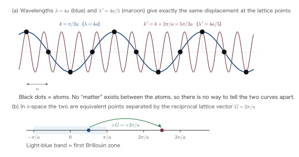

Chapter 13Phonons I — Lattice Vibrations
Through Chapter 12 we have seen what forces bind a crystal together and how stiff it is. The crystal treated there, however, was “an arrangement of atoms at rest.” In a real crystal the atoms are not at rest even at absolute zero. They vibrate incessantly about their equilibrium positions, and these vibrations govern an extremely wide range of properties of solids: specific heat, thermal expansion, heat conduction, the speed of sound, infrared absorption, and superconductivity.
The subject of this chapter is to describe these vibrations as waves. If $N$ atoms are connected to one another by springs, the equations of motion form a system of $3N$ coupled differential equations. Here $N \sim 10^{23}$. One would think there is no way to solve this properly—but a crystal has translational symmetry. As we saw in Chapter 11, the irreducible representations of the translation group are the phase factors $\ee^{\ii \kk\cdot\RR}$, and using this symmetry the system of $3N$ simultaneous equations decomposes neatly into independent small problems, one for each wave vector $\kk$ (for a chain with one atom per cell, $1\times1$; for a diatomic chain, $2\times2$). This is the whole content of this chapter.
What results is the dispersion relation $\omega(\kk)$. For elastic waves in a continuum it was the simple straight line $\omega = vk$, but once the discreteness of the atoms is taken into account it becomes the curved function $\omega = 2\sqrt{C/M}\,\abs{\sin(ka/2)}$. This “bending” gives rise to the existence of the first Brillouin zone, to the group velocity becoming $0$ at the zone boundary, and to the appearance of a new mode of vibration, the optical branch.
Finally, we quantize this classical wave. The harmonic-oscillator energy levels $E=(n+\tfrac12)\hbar\omega$ are assigned to each mode, and the quantum is called a phonon. A phonon is a quantum of lattice vibration in exactly the same sense that a photon is a quantum of the electromagnetic wave. However, the phonon “momentum” $\hbar\kk$ is not a true momentum—this seemingly trivial fact leads directly to the Umklapp process of Chapter 14 (why the thermal conductivity is finite even in a perfect crystal).
- The harmonic approximation: when the potential is Taylor-expanded about the equilibrium position, the first-order term vanishes and the second-order term remains
- Derive the dispersion relation $\omega=2\sqrt{C/M}\abs{\sin(ka/2)}$ of the one-dimensional monatomic chain, including the trigonometric manipulations, without skipping a single line
- Why we may restrict $k$ to the first Brillouin zone: what $\ee^{\ii 2\pi s}=1$ means, and the analogy with aliasing
- The group velocity $v_g=\dd\omega/\dd k$; its agreement with the speed of sound of the continuum in the long-wavelength limit; and how $v_g=0$ at the zone boundary, where the mode becomes a standing wave
- The general form with long-range forces, and the formula that extracts the force constants by the inverse Fourier transform of the dispersion relation
- Solving the $2\times2$ secular equation of the diatomic chain to obtain the acoustic and optical branches and the gap between them
- In three dimensions, with $p$ atoms per unit cell there are $3pN$ modes, of which $3N$ are acoustic and $3(p-1)N$ are optical
- The definition of the phonon, zero-point vibration, and the fact that the “crystal momentum” is not a true momentum
- The principle by which $\omega(\qq)$ can be measured by inelastic neutron scattering
13.1 The Harmonic Approximation — Why Springs?
13.1.1 Starting point: the total potential energy
We write the position of an atom in the crystal as $\RR_j + \uu_j$. Here $\RR_j$ is the equilibrium position (the lattice point of Chapter 1 plus the position within the basis), and $\uu_j$ is the displacement from it. The potential energy of the whole crystal is a function determined by the positions of all the atoms, so as a function of the displacements we can write
$$ U = U(\uu_1, \uu_2, \ldots, \uu_{N_{\text{atom}}}) $$Assuming that the $\uu_j$ are small, we expand this in a Taylor series about $\uu = 0$ (the state in which all atoms are at their equilibrium positions). For a while below, to keep the notation light, we consider one dimension and write the displacement of the $s$th atom as $u_s$ (a scalar).
Derivation: The first-order term vanishes in the Taylor expansion
Writing out the Taylor expansion of a function of many variables about $u=0$ up to third order, we have
$$ U(u_1,u_2,\ldots) = U_0 + \sum_{s} \left(\frac{\partial U}{\partial u_s}\right)_{0} u_s + \frac{1}{2}\sum_{s}\sum_{t} \left(\frac{\partial^2 U}{\partial u_s \partial u_t}\right)_{0} u_s u_t + \frac{1}{6}\sum_{s,t,w}\left(\frac{\partial^3 U}{\partial u_s\partial u_t\partial u_w}\right)_0 u_su_tu_w+\cdots $$Here the subscript $0$ means “evaluated with all displacements set to $0$.” We treat these four terms one at a time.
(i) The constant term $U_0$. This is the binding energy of the equilibrium configuration, namely the very Madelung energy and Lennard-Jones cohesive energy that we calculated in Chapter 12. Since it does not depend on $u$, it does not contribute to the force (the derivative of $U$). We may discard it as the origin of energy.
(ii) The first-order term. $(\partial U/\partial u_s)_0$ is the force acting on atom $s$ at its equilibrium position, with its sign changed:
$$ F_s = -\frac{\partial U}{\partial u_s}. $$But the “equilibrium position” was precisely the position where the force is zero. Therefore
$$ \left(\frac{\partial U}{\partial u_s}\right)_0 = 0 \qquad (\text{all } s) $$and the first-order term vanishes entirely. This is nothing but the definition of the equilibrium state; it is not an approximation.
(iii) The second-order term. The lowest order that remains is the second-order term. We therefore give the coefficient a name:
$$ \Phi_{st} \equiv \left(\frac{\partial^2 U}{\partial u_s \partial u_t}\right)_{0} $$This is called the force constant. Since the order of partial differentiation can be interchanged, $\Phi_{st}=\Phi_{ts}$; that is, the force-constant matrix is a symmetric matrix.
(iv) Discarding third and higher orders. The approximation that neglects the terms of third and higher order is called the harmonic approximation. We then obtain
$$ U - U_0 = \frac{1}{2}\sum_{s,t}\Phi_{st}\,u_s u_t $$so the potential becomes a quadratic form in the displacements. A potential that is a quadratic form is precisely the many-variable version of the spring potential $\tfrac12 C x^2$. $\;\blacksquare$
Since the force is the derivative of $U$, the force in the harmonic approximation is
that is, it is first order (linear) in the displacements. This linearity is the key to everything. Precisely because it is linear, superposition works, Fourier decomposition can be used, and the system can be decomposed into independent normal modes.
Why? What is so special about cutting off at second order?
A potential that is a quadratic form can always be rewritten, by a suitable linear transformation (that is, the diagonalization of the symmetric matrix $\Phi$), in the form of a “sum of independent harmonic oscillators”:
$$ U-U_0 = \frac{1}{2}\sum_{\alpha}\omega_\alpha^2 Q_\alpha^2 $$Here $Q_\alpha$ is called a normal coordinate. Thus, under the harmonic approximation, a system in which $10^{23}$ atoms are hopelessly entangled with one another is mathematically equivalent to a collection of $3N$ one-dimensional harmonic oscillators that do not interfere with one another at all. The one-dimensional harmonic oscillator is solved completely in quantum mechanics. Hence the vibrations of a solid can also be solved completely—this is the power of the harmonic approximation.
What this chapter does is, in the end, to carry out this diagonalization in advance by using symmetry. Thanks to translational symmetry, the part of the diagonalization that consists of “block-decomposing for each wavenumber $k$” comes for free. All that remains is to diagonalize a small $3p \times 3p$ matrix ($p$ is the number of atoms in the unit cell) for each $k$.
13.1.2 The case of a two-body potential: what the spring constant really is
Let us be more concrete and suppose that the interaction between atoms can be written as a sum of two-body potentials $\varphi(r)$. Let the nearest-neighbor distance be $a$, and suppose that in a one-dimensional chain the distance between adjacent atoms becomes $a+\delta$.
Derivation: $C=\varphi''(a)$, and its value for the Lennard-Jones potential
We expand $\varphi(a+\delta)$ in $\delta$:
$$ \varphi(a+\delta) = \varphi(a) + \varphi'(a)\,\delta + \frac{1}{2}\varphi''(a)\,\delta^2 + O(\delta^3). $$The equilibrium distance $a$ is defined by $\varphi'(a)=0$ (zero force), so the first-order term vanishes and
$$ \varphi(a+\delta) - \varphi(a) = \frac{1}{2}\varphi''(a)\,\delta^2 . $$Comparing this with the spring potential $\tfrac12 C\delta^2$, we find
$$ \boxed{\;C = \varphi''(a)\;} $$That is, the spring constant is the curvature of the interatomic potential at its equilibrium point. What determines the stiffness of the spring is not how deep the valley of the potential is, but how sharp the valley is.
Let us calculate concretely for the Lennard-Jones potential (Chapter 12)
$$ \varphi(r) = 4\epsilon\left[\left(\frac{\sigma}{r}\right)^{12} - \left(\frac{\sigma}{r}\right)^{6}\right] $$First, the first derivative:
$$ \varphi'(r) = 4\epsilon\left[-12\,\sigma^{12}r^{-13} + 6\,\sigma^{6}r^{-7}\right]. $$Setting $\varphi'(r_0)=0$ gives $12\sigma^{12}r_0^{-13} = 6\sigma^6 r_0^{-7}$; dividing both sides by $6\sigma^6 r_0^{-13}$ gives $2\sigma^6 = r_0^6$, that is,
$$ r_0 = 2^{1/6}\sigma \simeq 1.1225\,\sigma . $$Next, the second derivative:
$$ \varphi''(r) = 4\epsilon\left[156\,\sigma^{12}r^{-14} - 42\,\sigma^{6}r^{-8}\right]. $$We substitute $r=r_0$. Since $r_0^6=2\sigma^6$, we have $r_0^{12}=4\sigma^{12}$, $r_0^{14}=r_0^{12}r_0^2 = 4\sigma^{12}\cdot 2^{1/3}\sigma^2 = 4\cdot 2^{1/3}\sigma^{14}$, and $r_0^{8}=r_0^{6}r_0^{2}=2\cdot 2^{1/3}\sigma^{8}$. Therefore
$$ \varphi''(r_0) = 4\epsilon\left[\frac{156}{4\cdot 2^{1/3}\sigma^{2}} - \frac{42}{2\cdot 2^{1/3}\sigma^{2}}\right] = \frac{4\epsilon}{2^{1/3}\sigma^{2}}\left[39 - 21\right] = \frac{72\,\epsilon}{2^{1/3}\sigma^{2}} \simeq 57.1\,\frac{\epsilon}{\sigma^{2}} . $$Inserting the values for solid argon, $\epsilon/k_B = 120\,\mathrm{K}$ ($\epsilon = 1.66\times10^{-21}\,\mathrm{J}$) and $\sigma = 3.40\,\text{Å}$, we obtain
$$ C = 57.1 \times \frac{1.66\times10^{-21}}{(3.40\times10^{-10})^2}\ \mathrm{N/m} = 57.1\times 1.43\times10^{-2} \simeq 0.82\ \mathrm{N/m}. $$For metals and covalent crystals, $C \sim 10$–$100\ \mathrm{N/m}$. The springs of rare-gas solids are thus softer than these by about two orders of magnitude. $\;\blacksquare$
Caution: What the harmonic approximation cannot explain
The harmonic approximation is powerful, but there are several phenomena that it cannot explain in principle.
- Thermal expansion: $U=\tfrac12 C\delta^2$ is an even function of $\delta$, so even if the temperature is raised and the amplitude grows, $\langle \delta\rangle = 0$ remains. It is the asymmetry that stretching is more favorable than contracting (the cubic term $-g\delta^3$) that produces thermal expansion.
- The finiteness of the thermal conductivity: in the harmonic approximation the normal modes are completely independent of one another, so phonons are not scattered and the thermal conductivity becomes infinite. Collisions between phonons (three-phonon processes) are caused by the cubic term.
- The same is true of the temperature dependence of the elastic constants and the lifetime of phonons (the Raman linewidth).
All of these are effects of anharmonicity, which we treat in Chapter 14 in terms of the Grüneisen parameter and Umklapp processes. In this chapter, we first make sure to understand the harmonic world completely.
13.2 Complete Solution of the Monatomic Chain
13.2.1 Setting up the model
We begin with the simplest model. Identical atoms of mass $M$ are arranged in one dimension at intervals of the lattice constant $a$. Springs of spring constant $C$ act only between neighboring atoms, and the atoms are assumed to move only along the chain (longitudinal waves). We write $u_s$ for the displacement of the $s$th atom from its equilibrium position.
Supplement: This model is also the motion of the “planes” of a three-dimensional crystal
Following Kittel's way of writing, this model can also be read as follows. In a three-dimensional crystal, consider the atomic planes parallel to a certain crystal plane (for example, the $(100)$ plane of a cubic crystal) as units. When a wave propagates in the $[100]$ direction, all the atoms on such a plane move together by the same amount. Hence, if each “plane” is regarded as a single point mass, the collection of planes becomes a one-dimensional chain. Here $M$ is the mass per plane and $C$ is the effective spring constant between planes. With this reinterpretation, the results for the one-dimensional chain directly give the dispersion relation of the three-dimensional crystal along high-symmetry directions.
Derivation: Equation of motion
We count the forces acting on atom $s$. First, the spring to the right-hand neighbor, atom $s+1$. The extension of this spring from its natural length is
$$ (\text{position of atom } s+1 \text{ }) - (\text{position of atom } s \text{ }) - a = \left[(s+1)a+u_{s+1}\right]-\left[sa+u_s\right]-a = u_{s+1}-u_s . $$If the spring is stretched, atom $s$ is pulled to the right, so this force is $+C(u_{s+1}-u_s)$. Similarly, the extension of the spring to the left-hand neighbor is $u_s - u_{s-1}$, and if it is stretched, atom $s$ is pulled to the left, so the force is $-C(u_s-u_{s-1}) = +C(u_{s-1}-u_s)$. Adding the two,
$$ F_s = C(u_{s+1}-u_s) + C(u_{s-1}-u_s) = C\left(u_{s+1}+u_{s-1}-2u_s\right). $$From Newton's equation of motion $M\ddot u_s = F_s$,
This holds for $s=1,2,\ldots,N$, so it is a system of $N$ coupled second-order ordinary differential equations. The right-hand side is the second difference of $u_s$, and in the continuum limit it turns into $Ca^2\,\partial^2u/\partial x^2$ (we will check this later). That is, $\eqref{eq:13-eom}$ is the discrete version of the wave equation.
13.2.2 Substituting a plane wave
Why? May we put $u_s \propto \ee^{\ii ksa}$?
“Assume the solution is $\ee^{\ii(ksa-\omega t)}$” may look like a pronouncement from on high. But this is precisely the content of Chapter 11.
The chain has translational symmetry. That is, the operation $T$: “shift all atoms by $a$” does not change the Hamiltonian of the system. As we saw in Chapter 11, the translation group is commutative, so all its irreducible representations are one-dimensional, and the eigenvalue of $T$ is a complex number of absolute value 1, $\ee^{\ii ka}$. A normal mode is also an eigenvector of $T$, so its displacement pattern must satisfy
$$ u_{s+1} = \ee^{\ii ka}\,u_s $$Repeating this gives $u_s = \ee^{\ii ksa}u_0$. In other words, the plane-wave form is not a guess but a consequence of symmetry. The $k$ is the label attached to an irreducible representation of the translation group, that is, a quantum number.
We therefore put
Here $u$ is the (complex) amplitude. The actual displacement is obtained by taking the real part of this. Since the equation $\eqref{eq:13-eom}$ is linear, the real part of a complex solution is also a solution.
Derivation: Dispersion relation $\omega(k)$ — all the trigonometric steps written out
Step 1: The left-hand side (acceleration). Differentiate $\eqref{eq:13-ansatz}$ twice with respect to time. The only time dependence is $\ee^{-\ii\omega t}$, so
$$ \frac{\dd^2 u_s}{\dd t^2} = (-\ii\omega)^2 u\,\ee^{\ii(ksa-\omega t)} = -\omega^2 u_s . $$Hence the left-hand side $= -M\omega^2 u_s$.
Step 2: The right-hand side (neighboring atoms). When $s$ is replaced by $s\pm1$, the content of the exponent becomes $k(s\pm1)a = ksa \pm ka$, so
$$ u_{s\pm1} = u\,\ee^{\ii(k(s\pm1)a-\omega t)} = u\,\ee^{\ii(ksa-\omega t)}\,\ee^{\pm\ii ka} = \ee^{\pm \ii ka}\,u_s . $$This one move is the crux that collapses the coupled equations into a single equation. The displacement of a neighboring atom has become simply one's own displacement multiplied by a number (a phase factor). Hence the right-hand side is
$$ C\left(u_{s+1}+u_{s-1}-2u_s\right) = C\left(\ee^{\ii ka}+\ee^{-\ii ka}-2\right)u_s . $$Step 3: Divide both sides by $u_s$. Since $u_s \neq 0$ (we are considering a nontrivial vibration), we may divide. Both $s$ and $t$ disappear completely:
$$ -M\omega^2 = C\left(\ee^{\ii ka}+\ee^{-\ii ka}-2\right). $$The system of $N$ coupled equations has now become a single algebraic equation in $\omega$ and $k$ alone.
Step 4: Euler's formula. Adding $\ee^{\ii\theta} = \cos\theta + \ii\sin\theta$ and $\ee^{-\ii\theta} = \cos\theta - \ii\sin\theta$, the $\sin$ terms cancel, giving
$$ \ee^{\ii ka}+\ee^{-\ii ka} = 2\cos ka . $$Therefore
$$ \ee^{\ii ka}+\ee^{-\ii ka}-2 = 2\cos ka - 2 = 2(\cos ka - 1). $$Step 5: The half-angle formula. Substituting $\cos^2\theta = 1-\sin^2\theta$ into the double-angle formula $\cos 2\theta = \cos^2\theta-\sin^2\theta$ gives
$$ \cos 2\theta = 1-2\sin^2\theta . $$Now if we put $2\theta = ka$, that is, $\theta = ka/2$, then
$$ \cos ka = 1 - 2\sin^2\!\frac{ka}{2} \quad\Longrightarrow\quad \cos ka - 1 = -2\sin^2\!\frac{ka}{2}. $$To summarize,
$$ \ee^{\ii ka}+\ee^{-\ii ka}-2 = 2(\cos ka-1) = -4\sin^2\!\frac{ka}{2}. $$Step 6: Tidying up. Substituting into Step 3,
$$ -M\omega^2 = -4C\sin^2\!\frac{ka}{2} \quad\Longrightarrow\quad \omega^2 = \frac{4C}{M}\sin^2\!\frac{ka}{2}. $$Take the square root of both sides. Since $\omega$ is an angular frequency we take the positive root, and noting that $\sqrt{\sin^2 x}=\abs{\sin x}$,
$$ \omega(k) = 2\sqrt{\frac{C}{M}}\;\abs{\sin\frac{ka}{2}} . \qquad \blacksquare $$Physical Meaning: What does this equation say?
It says that “when a wave is set up on a row of atoms joined by springs, the frequency of the wave is determined by its wavelength; moreover, this relation is not a simple proportionality as in a continuum, but bends into the shape of a $\sin$ function.” There are three points to read off.
- A straight line in the long-wavelength limit ($k\to0$): from $\sin x \simeq x$, $\omega \simeq 2\sqrt{C/M}\cdot(ka/2) = a\sqrt{C/M}\,k$. This is a sound wave. If the wavelength is much longer than the interatomic distance, the graininess of the atoms is not seen, and the crystal looks like a continuum.
- There is an upper limit to the frequency: since $\abs{\sin}\le1$, $\omega \le \omega_{\max} = 2\sqrt{C/M}$. However hard one shakes the chain, it cannot be made to vibrate faster than this. This is the decisive difference from a continuum ($\omega=vk$, with no upper limit), and it is the reason why the Debye model (Chapter 14) later needs an upper limit.
- Periodicity: $\omega$ does not change under $k\to k+2\pi/a$. This is the subject of the next section.
![Model of the monatomic chain and its dispersion relation. (a) Atoms, drawn as blue circles, are displaced along the chain about the equilibrium positions shown by dashed lines, and neighbors are connected by springs. (b) The dispersion relation, with the wavenumber k on the horizontal axis and the angular frequency ω on the vertical axis: the curve ω = 2√(C/M)|sin(ka/2)|. The part inside the first Brillouin zone is a dark blue solid line and the part outside it is a gray dashed line; at the origin the curve is tangent to the crimson dashed line (sound wave ω = vk), and at the zone boundary k = ±π/a it becomes horizontal and reaches the maximum value ω_max.](figs/ch13_fig13-1.svg)
13.2.3 Periodic boundary conditions and the number of allowed $k$
The variable $k$ looks like a continuous variable, but in a finite crystal only discrete values are allowed. As in Chapter 11, we impose the Born–von Kármán periodic boundary conditions. That is, we join the two ends of a chain of $N$ atoms into a ring and require
$$ u_{s+N} = u_s $$Substituting $\eqref{eq:13-ansatz}$ gives $\ee^{\ii k(s+N)a} = \ee^{\ii ksa}$, that is, $\ee^{\ii kNa}=1$. An exponential equals 1 when its exponent is an integer multiple of $2\pi$, so
The allowed $k$ are equally spaced with spacing $2\pi/(Na)$. The width of the first Brillouin zone $-\pi/a < k \le \pi/a$ is $2\pi/a$, so the number of $k$ that fit inside it is
$$ \frac{2\pi/a}{2\pi/(Na)} = N . $$If there are $N$ atoms, there are $N$ degrees of freedom and $N$ normal modes. The count comes out exactly right. This is no coincidence; it reflects the fact that an $N$-dimensional eigenvalue problem has $N$ eigenvectors. We will use this counting repeatedly when constructing the density of states in Chapter 14.
Example 13.1: A chain model of copper — getting a feel for orders of magnitude
For copper (fcc, lattice constant $3.61\,\text{Å}$), the nearest-neighbor interatomic distance in the $[110]$ direction is $a = 2.55\,\text{Å}$, and the atomic weight is $63.5$. Taking the spring constant to be $C = 25\ \mathrm{N/m}$, find $\omega_{\max}$, the corresponding frequency $\nu_{\max}$, the energy $\hbar\omega_{\max}$ (in meV), the temperature equivalent $\hbar\omega_{\max}/k_B$, and the speed of sound in the long-wavelength limit, $v=a\sqrt{C/M}$.
Solution.
First the mass. Since $1\ \mathrm{u} = 1.6605\times10^{-27}\,\mathrm{kg}$,
$$ M = 63.5\times1.6605\times10^{-27} = 1.054\times10^{-25}\ \mathrm{kg}. $$Next, $\sqrt{C/M}$:
$$ \frac{C}{M} = \frac{25}{1.054\times10^{-25}} = 2.37\times10^{26}\ \mathrm{s^{-2}}, \qquad \sqrt{\frac{C}{M}} = 1.54\times10^{13}\ \mathrm{s^{-1}}. $$Therefore
$$ \omega_{\max} = 2\times1.54\times10^{13} = 3.08\times10^{13}\ \mathrm{rad/s}, \qquad \nu_{\max} = \frac{\omega_{\max}}{2\pi} = 4.90\times10^{12}\ \mathrm{Hz} = 4.90\ \mathrm{THz}. $$The energy is
$$ \hbar\omega_{\max} = 1.055\times10^{-34}\times3.08\times10^{13} = 3.25\times10^{-21}\ \mathrm{J} = \frac{3.25\times10^{-21}}{1.602\times10^{-19}}\ \mathrm{eV} = 20.3\ \mathrm{meV}. $$Converting to temperature,
$$ \frac{\hbar\omega_{\max}}{k_B} = \frac{3.25\times10^{-21}}{1.381\times10^{-23}} = 235\ \mathrm{K}. $$The speed of sound is
$$ v = a\sqrt{\frac{C}{M}} = 2.55\times10^{-10}\times1.54\times10^{13} = 3.9\times10^{3}\ \mathrm{m/s}. $$Check and discussion. The Debye temperature of copper is $343\ \mathrm{K}$, and the longitudinal speed of sound is about $4.7\times10^3\ \mathrm{m/s}$. For a one-dimensional model that considers only a single spring, both are good enough in order of magnitude. Moreover, $\hbar\omega_{\max}=20\ \mathrm{meV}$ is comparable to the room-temperature thermal energy $k_BT = 25.9\ \mathrm{meV}$ ($300\ \mathrm{K}$). We can read off that room temperature is, for phonons, just the temperature at which “all the modes are about to wake up”. This feeling will prove useful when we treat the specific heat in Chapter 14.
Supplement: A list of typical values
| Quantity | Typical value | Remarks |
|---|---|---|
| Spring constant $C$ | $0.8\ \mathrm{N/m}$ (solid Ar) to $100\ \mathrm{N/m}$ (diamond) | Curvature of the potential |
| Maximum angular frequency $\omega_{\max}$ | $10^{13}$–$3\times10^{14}\ \mathrm{rad/s}$ | $2\sqrt{C/M}$ |
| Frequency $\nu_{\max}$ | $1$–$40\ \mathrm{THz}$ | Si: $15.6$ THz |
| Energy $\hbar\omega$ | $4$–$160\ \mathrm{meV}$ | The optical phonon of Si is $64$ meV |
| Wavenumber (spectroscopy) | $30$–$1300\ \mathrm{cm^{-1}}$ | $1\ \mathrm{meV} = 8.066\ \mathrm{cm^{-1}}$ |
| Speed of sound $v$ | $2$–$18\ \mathrm{km/s}$ | Diamond is the fastest |
| $k_BT$ (room temperature) | $25.9\ \mathrm{meV}$ | Reference for comparison |
13.3 Why Is the First Brillouin Zone Enough?
In Figure 13.1(b), the dispersion curve repeats the same shape in $k$ with period $2\pi/a$. The part outside the zone (gray dashed curve) is nothing but a translation of the dark curve inside. This is no accident. $k$ and $k+2\pi/a$ represent exactly the same vibrational state physically. In this section we confirm this from three points of view: equations, figures, and an analogy with signal processing.
13.3.1 Seeing it in an equation: $\ee^{\ii 2\pi s}=1$
Derivation: The displacement pattern does not change under $k \to k+2\pi/a$
We write down the displacement of the solution with wavenumber $k' = k + 2\pi/a$. From $\eqref{eq:13-ansatz}$,
$$ u_s^{(k')} = u\,\ee^{\ii(k'sa-\omega t)} = u\,\exp\!\left[\ii\left(k+\frac{2\pi}{a}\right)sa - \ii\omega t\right]. $$Separating the terms in the exponent:
$$ \left(k+\frac{2\pi}{a}\right)sa = ksa + \frac{2\pi}{a}\cdot sa = ksa + 2\pi s . $$The key point here is that $a$ cancels cleanly. Hence
$$ u_s^{(k')} = u\,\ee^{\ii(ksa-\omega t)}\cdot \ee^{\ii 2\pi s}. $$Now $s$ is an integer (the number telling which atom we are looking at). For an integer $s$,
$$ \ee^{\ii 2\pi s} = \cos(2\pi s) + \ii\sin(2\pi s) = 1 + \ii\cdot 0 = 1 . $$Therefore
$$ u_s^{(k')} = u\,\ee^{\ii(ksa-\omega t)} = u_s^{(k)} \qquad(\text{for all } s). $$That is, every atom undergoes exactly the same displacement. The two wavenumbers describe the same physical state.
Let us also check the frequency. Setting $k\to k+2\pi/a$ in $\eqref{eq:13-mono}$, the argument of the $\sin$ becomes
$$ \frac{k'a}{2} = \frac{ka}{2} + \frac{2\pi}{a}\cdot\frac{a}{2} = \frac{ka}{2}+\pi $$Since $\sin(\theta+\pi) = -\sin\theta$, taking the absolute value gives
$$ \abs{\sin\frac{k'a}{2}} = \abs{-\sin\frac{ka}{2}} = \abs{\sin\frac{ka}{2}} \quad\Longrightarrow\quad \omega(k+2\pi/a) = \omega(k). \qquad\blacksquare $$More generally, the reciprocal lattice vectors of a one-dimensional lattice are $G = 2\pi n/a$ (Chapter 3), so
holds. Therefore all the independent information is contained in one period of the reciprocal lattice. The most natural choice of that period is the Wigner–Seitz cell around the origin, that is, the first Brillouin zone
$$ -\frac{\pi}{a} < k \le \frac{\pi}{a} $$If a $k$ outside the zone is given, we only have to add or subtract a suitable $G$ and fold it back (reduce it) into the zone.
13.3.2 Seeing it in a figure: only the lattice points are real
You may accept the equations and still feel uneasy about it intuitively. “A wave of wavelength $4a$ and a wave of wavelength $4a/5$ obviously look different, don’t they?”
The source of this unease is that we unconsciously picture a “wave” as a continuous curve. In a crystal, however, there are only the lattice points. There is no matter between one lattice point and the next. Hence “how the wave passes through the space in between” is a question that is meaningless to ask. All that can be determined is the displacement $u_s$ at each lattice point, and if these coincide, the two waves cannot be distinguished.

Physical Meaning: It is aliasing itself
This is mathematically exactly the same as a phenomenon familiar from signal processing. When a continuous signal is sampled at intervals $\Delta t$, a signal of frequency $f$ and a signal of frequency $f + n/\Delta t$ become indistinguishable at the sampling points. This is called aliasing, and the upper limit of distinguishable frequencies, $1/(2\Delta t)$, is called the Nyquist frequency.
In a crystal, space is sampled at intervals $a$. Hence the upper limit of distinguishable wavenumbers is $\pi/a$ (the Nyquist wavenumber), and this is precisely the zone boundary. An everyday example of this phenomenon is the apparent reverse rotation of wheels in films (the wagon-wheel effect). Because of the sampling at 24 frames per second, fast rotation is “folded back” and appears as slow reverse rotation.
A crystal is a system in which space itself is sampled—this one sentence is the whole reason for the existence of the first Brillouin zone. And the same argument appears in exactly the same form in the diffraction condition of Chapter 3 ($\Delta\kk = \GG$) and in the folding back of electron bands in Chapter 16.
Example 13.2: Folding back a $k$ outside the zone
Consider a vibration of wavenumber $k = 7\pi/(4a)$ in a monatomic chain with lattice constant $a$.
(1) Find the value $k_{\text{red}}$ obtained by folding this $k$ back into the first Brillouin zone.
(2) Verify explicitly, for $s=0,1,2,3$, that the displacements $u_s$ of the two coincide.
(3) Verify that $\omega$ coincides for the two.
Solution.
(1) The first Brillouin zone is $-\pi/a < k \le \pi/a$. Since $k=7\pi/(4a)$ is larger than this, we subtract $G=2\pi/a$:
$$ k_{\text{red}} = \frac{7\pi}{4a} - \frac{2\pi}{a} = \frac{7\pi - 8\pi}{4a} = -\frac{\pi}{4a}. $$Since $-\pi/a < -\pi/(4a) \le \pi/a$, it is indeed inside the zone.
(2) It suffices to compare the phase factors. For $k=7\pi/(4a)$ we have $ksa = 7\pi s/4$, and for $k_{\text{red}}$ we have $k_{\text{red}}sa = -\pi s/4$. The difference is
$$ \frac{7\pi s}{4} - \left(-\frac{\pi s}{4}\right) = \frac{8\pi s}{4} = 2\pi s . $$Explicitly:
| $s$ | $\ee^{\ii\,7\pi s/4}$ | $\ee^{-\ii\,\pi s/4}$ | Match? |
|---|---|---|---|
| 0 | $1$ | $1$ | ○ |
| 1 | $\ee^{\ii 7\pi/4}=\tfrac{1}{\sqrt2}(1-\ii)$ | $\ee^{-\ii\pi/4}=\tfrac{1}{\sqrt2}(1-\ii)$ | ○ |
| 2 | $\ee^{\ii 7\pi/2}=\ee^{-\ii\pi/2}=-\ii$ | $\ee^{-\ii\pi/2}=-\ii$ | ○ |
| 3 | $\ee^{\ii 21\pi/4}=\ee^{-\ii 3\pi/4}$ | $\ee^{-\ii 3\pi/4}$ | ○ |
(3) We compare $\abs{\sin(7\pi/8)}$ and $\abs{\sin(-\pi/8)}$. We have $\sin(7\pi/8) = \sin(\pi - \pi/8) = \sin(\pi/8)$, while $\abs{\sin(-\pi/8)} = \sin(\pi/8)$. Hence they are equal, and $\omega$ coincides as well. $\;\square$
Caution: The “magnitude” of $k$ has no physical meaning, but…
As we have just seen, $k$ and $k+G$ represent the same state, so the absolute magnitude of $k$ has no meaning. This does not mean, however, that $k$ is meaningless.
- $k$ is determined uniquely within the first Brillouin zone, and it has a clear meaning as the phase difference $ka$ between neighboring atoms.
- For the group velocity $v_g = \dd\omega/\dd k$, the periodicity $\omega(k+G)=\omega(k)$ holds, and shifting $k$ by the constant $G$ does not change the value of the derivative. That is, the group velocity is invariant under folding back and is a physically meaningful quantity.
- The phase velocity $\omega/k$, on the other hand, changes under folding back (only the denominator shifts). Therefore the phase velocity of a wave in a lattice has little physical meaning. It is the group velocity that carries energy and information.
This fact that “$k$ is determined only up to $G$” plays a decisive role when we discuss “phonon momentum” in Section 13.8.
13.4 Group Velocity, Sound Velocity, and the Zone Boundary
13.4.1 Group velocity
The speed at which a wave packet carries energy is the group velocity
$$ v_g = \frac{\dd\omega}{\dd k} $$Let us differentiate $\eqref{eq:13-mono}$.
Derivation: $v_g = a\sqrt{C/M}\,\cos(ka/2)$
In the range $0 \le k \le \pi/a$ we have $\sin(ka/2)\ge0$, so the absolute-value signs can be dropped:
$$ \omega(k) = 2\sqrt{\frac{C}{M}}\,\sin\frac{ka}{2}. $$Differentiate with respect to $k$. By the chain rule (the derivative of the inner function $ka/2$ is $a/2$),
$$ \frac{\dd\omega}{\dd k} = 2\sqrt{\frac{C}{M}}\cdot \cos\!\left(\frac{ka}{2}\right)\cdot\frac{a}{2} = a\sqrt{\frac{C}{M}}\,\cos\frac{ka}{2}. \qquad\blacksquare $$This expression takes its maximum value $a\sqrt{C/M}$ at $k=0$, and at the zone boundary $k=\pi/a$ we have $\cos(\pi/2)=0$, so it vanishes. The larger $k$ becomes, the less energy the wave carries.
13.4.2 The long-wavelength limit: agreement with the elastic wave of a continuum
Derivation: From the discrete equation of motion to the wave equation
Look at the right-hand side of $\eqref{eq:13-eom}$. Instead of the atom number $s$, use the continuous coordinate $x=sa$, and regard the displacement as a continuous function $u(x,t)$. Then $u_{s\pm1} = u(x\pm a,t)$, and the Taylor expansion of this about $x$ gives
$$ u(x\pm a) = u(x) \pm a\,\frac{\partial u}{\partial x} + \frac{a^2}{2}\frac{\partial^2u}{\partial x^2} \pm \frac{a^3}{6}\frac{\partial^3u}{\partial x^3}+\frac{a^4}{24}\frac{\partial^4u}{\partial x^4}+\cdots $$When the two are added, the odd-order terms cancel because of their opposite signs:
$$ u(x+a)+u(x-a) = 2u(x) + a^2\frac{\partial^2u}{\partial x^2} + \frac{a^4}{12}\frac{\partial^4 u}{\partial x^4}+\cdots $$Therefore
$$ u_{s+1}+u_{s-1}-2u_s = a^2\frac{\partial^2u}{\partial x^2} + \frac{a^4}{12}\frac{\partial^4u}{\partial x^4}+\cdots $$If the wavelength satisfies $\lambda \gg a$, each differentiation produces a factor $2\pi/\lambda$, so the second term is of the order of $(a/\lambda)^2$ times the first term and can be neglected. Then $\eqref{eq:13-eom}$ becomes
$$ M\frac{\partial^2u}{\partial t^2} = Ca^2\frac{\partial^2 u}{\partial x^2} \quad\Longrightarrow\quad \frac{\partial^2u}{\partial t^2} = \frac{Ca^2}{M}\frac{\partial^2u}{\partial x^2} $$which is a wave equation. Comparing with $\partial_t^2 u = v^2\partial_x^2u$, we find
$$ v = a\sqrt{\frac{C}{M}} . \qquad\blacksquare $$This agrees with the value of $\eqref{eq:13-vg}$ at $k\to0$. That is, a long-wavelength phonon is nothing other than an elastic wave (sound wave) of a continuum.
Why? How is this connected to the elastic constants of Chapter 12?
In Chapter 12 we saw that the velocity of an elastic wave can be written in the form $v=\sqrt{C_{11}/\rho}$ (longitudinal wave along $[100]$ in a cubic crystal). Let us reproduce this for the one-dimensional chain.
Effective elastic modulus. Stretch the whole chain uniformly by a strain $e$. The elongation of each spring is $\delta = ea$, so the force on a spring is $F = C\delta = Cae$. In one dimension the “stress” is the force itself, so the ratio of stress to strain (the one-dimensional Young's modulus) is
$$ Y_{1\mathrm{D}} = \frac{F}{e} = Ca . $$Effective mass density. Since there is a mass $M$ per length $a$, the linear density is
$$ \rho_{1\mathrm{D}} = \frac{M}{a}. $$Speed of sound. Therefore
$$ v = \sqrt{\frac{Y_{1\mathrm{D}}}{\rho_{1\mathrm{D}}}} = \sqrt{\frac{Ca}{M/a}} = \sqrt{\frac{Ca^2}{M}} = a\sqrt{\frac{C}{M}} . $$The agreement is perfect. The microscopic spring constant and the macroscopic elastic constant are linked by the relation $Y_{1\mathrm{D}}=Ca$. In three dimensions, we have $C_{11}\sim C/a$ in order of magnitude (force / area / strain).
13.4.3 The onset of dispersion: expansion up to third order in $k$
Let us examine quantitatively how far the curve deviates from a straight line when $k$ becomes finite.
Derivation: The $k^2$ correction to $\omega$ and to the phase velocity
Use $\sin x = x - \dfrac{x^3}{6} + O(x^5)$ with $x = ka/2$:
$$ \omega = 2\sqrt{\frac{C}{M}}\left[\frac{ka}{2} - \frac{1}{6}\left(\frac{ka}{2}\right)^3+\cdots\right] = a\sqrt{\frac{C}{M}}\;k\left[1 - \frac{(ka)^2}{24}+\cdots\right]. $$Here we have factored $a\sqrt{C/M}\,k$ out of the terms, using $2\cdot\frac{1}{6}\cdot\frac{(ka)^3}{8} = \frac{(ka)^3}{24}$. Hence
$$ \frac{v_{\text{ph}}}{v} = \frac{\omega/k}{v} = 1 - \frac{(ka)^2}{24}+\cdots $$That is, the dispersion (the deviation from a straight line) begins at second order in $k$. At $k=\pi/(2a)$ (half the zone),
$$ \frac{(ka)^2}{24} = \frac{(\pi/2)^2}{24} = \frac{2.467}{24} = 0.103, $$that is, a reduction of about $10\%$. Indeed, $\omega(\pi/2a)/\left[v\cdot\pi/(2a)\right] = 2\sin(\pi/4)/(\pi/2) = 1.4142/1.5708 = 0.900$, which agrees well with the prediction of the expansion. $\;\blacksquare$
13.4.4 The zone boundary: standing waves and Bragg reflection
Derivation: At $k=\pi/a$ the wave does not propagate
Substitute $k=\pi/a$ into $\eqref{eq:13-ansatz}$. The phase factor is
$$ \ee^{\ii ksa} = \ee^{\ii (\pi/a)sa} = \ee^{\ii\pi s} = (\cos\pi + \ii\sin\pi)^s = (-1)^s . $$Therefore
$$ u_s = u\,(-1)^s\,\ee^{-\ii\omega t}. $$Taking the real part gives $u_s = u(-1)^s\cos\omega t$. This is a pattern in which neighboring atoms move in exactly opposite directions, and since the $s$ dependence is the real number $(-1)^s$, it carries no information about the propagation direction. That is, it is a standing wave.
The same happens at $k=-\pi/a$: $\ee^{-\ii\pi s}=(-1)^s$, exactly the same as for $k=+\pi/a$. That is, at the zone boundary a right-moving wave and a left-moving wave cannot be distinguished, and only a superposition of the two can exist. $\;\blacksquare$
Physical Meaning: This is Bragg reflection
Why can a wave not propagate at the zone boundary? Recall the Bragg condition of Chapter 3. In one dimension, the process in which a wave of wavenumber $k$ is reflected by the lattice and becomes $-k$ occurs when the change in momentum equals a reciprocal lattice vector, that is, when
$$ (-k) - k = -G \quad\Longrightarrow\quad 2k = G = \frac{2\pi}{a} \quad\Longrightarrow\quad k = \frac{\pi}{a} $$This is exactly the zone boundary. For a wave at the zone boundary, the components reflected by the individual atoms return exactly in phase, so the wave cannot move forward and becomes a standing wave. $v_g=0$ is the expression of this fact.
This argument reappears unchanged in Chapter 16. There the electron wave is Bragg-reflected at the zone boundary, a traveling wave splits into two standing waves, and the energy difference between the two becomes the band gap. At the zone boundary the wave stops—a principle common to lattice vibrations and electrons.
Example 13.3: Concrete values of the group velocity
For the copper chain of Example 13.1 ($a=2.55\,\text{Å}$, $\sqrt{C/M}=1.54\times10^{13}\ \mathrm{s^{-1}}$), find the group velocity and $\omega/\omega_{\max}$ at $k=0$, $k=\pi/(2a)$, $k=0.9\pi/a$, and $k=\pi/a$.
Solution. Use $v = a\sqrt{C/M}=3.93\times10^3\ \mathrm{m/s}$ and $\omega_{\max}=2\sqrt{C/M}=3.08\times10^{13}\ \mathrm{s^{-1}}$. By $\eqref{eq:13-vg}$, $v_g = v\cos(ka/2)$, and by $\eqref{eq:13-mono}$, $\omega/\omega_{\max}=\sin(ka/2)$.
| $k$ | $ka/2$ | $\omega/\omega_{\max}=\sin(ka/2)$ | $v_g/v=\cos(ka/2)$ | $v_g$ [m/s] |
|---|---|---|---|---|
| $0$ | $0$ | $0$ | $1.000$ | $3930$ |
| $\pi/(2a)$ | $\pi/4=45^\circ$ | $0.707$ | $0.707$ | $2780$ |
| $0.9\pi/a$ | $81^\circ$ | $0.988$ | $0.156$ | $614$ |
| $\pi/a$ | $\pi/2=90^\circ$ | $1.000$ | $0$ | $0$ |
Reading the result. Already at the point $90\%$ of the way to the zone boundary, the group velocity has dropped to $16\%$ of the speed of sound. The ability to carry energy is lost rapidly near the zone boundary. When we discuss heat conduction in Chapter 14, the fact that “phonons near the zone boundary carry little heat” comes from here.
See also: Appendix C
What pattern the atomic displacements take at the zone boundary of a three-dimensional crystal (for example, the rotation of the oxygen octahedra in $\mathrm{SrTiO_3}$) can be seen in Appendix C §C.7.
13.5 Long-Range Forces, and Extracting Force Constants from the Dispersion Relation
13.5.1 The general form including neighbors up to the $p$th
Suppose that an atom is coupled not only to its nearest neighbors but also to its $p$th neighbor (at distance $pa$) by a spring of spring constant $C_p$. In metals the interaction mediated by conduction electrons reaches far, so this is a realistic extension.
Derivation: $\omega^2 = \dfrac{2}{M}\sum_p C_p\left(1-\cos pka\right)$
By exactly the same argument as in Section 13.2.1, the force that atom $s$ receives from the springs to its $p$th neighbors is $C_p(u_{s+p}+u_{s-p}-2u_s)$. Summing over all $p$ gives
$$ M\ddot u_s = \sum_{p>0} C_p\left(u_{s+p}+u_{s-p}-2u_s\right). $$We substitute $u_s = u\,\ee^{\ii(ksa-\omega t)}$. Since $u_{s\pm p} = \ee^{\pm\ii pka}u_s$ (the quantity inside the exponent becomes $k(s\pm p)a = ksa \pm pka$), we obtain
$$ -M\omega^2 u_s = \sum_{p>0}C_p\left(\ee^{\ii pka}+\ee^{-\ii pka}-2\right)u_s . $$Dividing by $u_s$ and using Euler's formula $\ee^{\ii\theta}+\ee^{-\ii\theta}=2\cos\theta$ (this time with $\theta = pka$), we find
$$ -M\omega^2 = \sum_{p>0}C_p\left(2\cos pka - 2\right) = -2\sum_{p>0}C_p\left(1-\cos pka\right). $$Changing the sign of both sides and dividing by $M$, we get
$$ \omega^2 = \frac{2}{M}\sum_{p>0}C_p\left(1-\cos pka\right) = \frac{4}{M}\sum_{p>0}C_p\sin^2\frac{pka}{2} $$(in the last step we again used $1-\cos\theta = 2\sin^2(\theta/2)$). Keeping only $p=1$ returns us to $\eqref{eq:13-mono}$. $\;\blacksquare$
This equation says that $\omega^2(k)$ is, as a function of $k$, an even function with period $2\pi/a$, and that the expansion coefficients of its Fourier cosine series are precisely the force constants $C_p$. Then the converse should also hold—if we measure the dispersion relation, we can extract the force constants by the inverse Fourier transform.
13.5.2 Extracting $C_p$ by the inverse Fourier transform
Derivation: $C_p = -\dfrac{Ma}{2\pi}\displaystyle\int_{-\pi/a}^{\pi/a}\omega^2(k)\cos(pka)\,\dd k$
Step 1: Prepare the orthogonality. For an integer $m\neq0$,
$$ \int_{-\pi/a}^{\pi/a}\cos(mka)\,\dd k =\left[\frac{\sin(mka)}{ma}\right]_{-\pi/a}^{\pi/a} =\frac{\sin(m\pi)-\sin(-m\pi)}{ma}=0 , $$and for $m=0$, $\int \dd k = 2\pi/a$. These two facts support everything that follows.
Step 2: Multiply both sides of $\eqref{eq:13-longrange}$ by $\cos(pka)$ and integrate. Fix $p$ to be a positive integer.
$$ \int_{-\pi/a}^{\pi/a}\omega^2\cos(pka)\,\dd k =\frac{2}{M}\sum_{p'>0}C_{p'}\int_{-\pi/a}^{\pi/a}\left(1-\cos p'ka\right)\cos(pka)\,\dd k . $$Step 3: Split the integral on the right-hand side into two. The first term is exactly the case $m=p\neq0$ of Step 1:
$$ \int_{-\pi/a}^{\pi/a}1\cdot\cos(pka)\,\dd k = 0 . $$For the second term, we use the product-to-sum formula
$$ \cos A\cos B = \frac{1}{2}\left[\cos(A-B)+\cos(A+B)\right] $$with $A=p'ka$ and $B=pka$, which gives
$$ \int_{-\pi/a}^{\pi/a}\cos(p'ka)\cos(pka)\,\dd k =\frac12\int_{-\pi/a}^{\pi/a}\Big[\cos\big((p'-p)ka\big)+\cos\big((p'+p)ka\big)\Big]\dd k . $$Since $p,p'$ are both positive, $p'+p\neq0$, so the second part is $0$. The first part gives $2\pi/a$ only when $p'=p$ and is $0$ otherwise. Therefore
$$ \int_{-\pi/a}^{\pi/a}\cos(p'ka)\cos(pka)\,\dd k = \frac{\pi}{a}\,\delta_{p'p}. $$Step 4: Put it together. On the right-hand side only the term with $p'=p$ survives, and its sign comes from the $-\cos$ side, so
$$ \int_{-\pi/a}^{\pi/a}\omega^2\cos(pka)\,\dd k =\frac{2}{M}C_p\left(0 - \frac{\pi}{a}\right) = -\frac{2\pi C_p}{Ma}. $$Step 5: Solve for $C_p$.
$$ C_p = -\frac{Ma}{2\pi}\int_{-\pi/a}^{\pi/a}\omega^2(k)\cos(pka)\,\dd k . \qquad\blacksquare $$Physical Meaning: “Seeing” interatomic forces from experiment
This equation is not merely a mathematical game. If we measure $\omega(k)$ by inelastic neutron scattering (Section 13.9) and feed it into $\eqref{eq:13-fourierinv}$, the force constants $C_1, C_2, C_3, \ldots$ acting between atoms come out as numerical values. The interatomic forces inside a crystal can be determined from experiment alone.
When this is actually done, one finds that in metals $C_p$ does not decrease monotonically with $p$ but decays slowly while changing sign. This is because conduction electrons mediate the interatomic forces, and this mediation oscillates with wavenumber $2k_F$ (Friedel oscillation). As a consequence, a subtle kink appears in the dispersion curve $\omega(k)$ near $k=2k_F$. This is called the Kohn anomaly, and it provides a means of reading the shape of the Fermi surface (Chapter 18) from phonons.
Example 13.4: Checking $\eqref{eq:13-fourierinv}$ for the nearest-neighbor-only case
For $C_1=C$ and $C_p=0\;(p\ge2)$, verify that $\eqref{eq:13-fourierinv}$ indeed returns $C_1=C$ and $C_2=0$.
Solution. From $\eqref{eq:13-longrange}$, $\omega^2 = \dfrac{2C}{M}(1-\cos ka)$. We substitute this.
$p=1$:
$$ C_1 = -\frac{Ma}{2\pi}\cdot\frac{2C}{M}\int_{-\pi/a}^{\pi/a}(1-\cos ka)\cos(ka)\,\dd k = -\frac{aC}{\pi}\left[\underbrace{\int\cos ka\,\dd k}_{=0} - \underbrace{\int\cos^2 ka\,\dd k}_{=\pi/a}\right]. $$(The second integral is the case $p'=p=1$ of Step 3.) Hence
$$ C_1 = -\frac{aC}{\pi}\left(0-\frac{\pi}{a}\right) = C . \quad\checkmark $$$p=2$: Similarly,
$$ C_2 = -\frac{aC}{\pi}\left[\int_{-\pi/a}^{\pi/a}\cos(2ka)\,\dd k - \int_{-\pi/a}^{\pi/a}\cos(ka)\cos(2ka)\,\dd k\right] = -\frac{aC}{\pi}\left[0 - 0\right] = 0 . \quad\checkmark $$This is as expected. $\;\square$
13.6 The Diatomic Chain — Acoustic and Optical Branches
Here we reach the climax of this chapter. When we consider a chain with two atoms in the unit cell, a completely new kind of vibration appears: the optical branch. The infrared absorption of NaCl, the Raman peak of Si at $520.5\ \mathrm{cm^{-1}}$, and the ferroelectric phase transition of $\mathrm{BaTiO_3}$ (Chapter 19) are all stories about this branch.
13.6.1 The model and the equations of motion
Atoms of masses $M_1$ and $M_2$ are arranged alternately. Let the length of the unit cell be $a$; each unit cell contains one atom of mass $M_1$ and one atom of mass $M_2$ (the spacing between neighboring atoms is $a/2$). The spring constant is the same, $C$, for every nearest-neighbor pair. We write the displacement of the $M_1$ atom in the $s$th cell as $u_s$ and that of the $M_2$ atom as $v_s$. The arrangement is
$$ \cdots \;-\; \underbrace{M_1(u_s) \;-\; M_2(v_s)}_{s\text{th cell}} \;-\; \underbrace{M_1(u_{s+1}) \;-\; M_2(v_{s+1})}_{(s+1)\text{th cell}} \;-\; \cdots $$.
Derivation: The coupled equations of motion
The force on $M_1$ (displacement $u_s$). The right-hand neighbor is the $M_2$ atom of the same cell (displacement $v_s$), and the left-hand neighbor is the $M_2$ atom of the previous cell (displacement $v_{s-1}$). Counting as in 13.2.1, we obtain
$$ M_1\ddot u_s = C\left(v_s - u_s\right) + C\left(v_{s-1}-u_s\right) = C\left(v_s + v_{s-1} - 2u_s\right). $$The force on $M_2$ (displacement $v_s$). The left-hand neighbor is the $M_1$ atom of the same cell (displacement $u_s$), and the right-hand neighbor is the $M_1$ atom of the next cell (displacement $u_{s+1}$). Hence
$$ M_2\ddot v_s = C\left(u_{s+1}-v_s\right)+C\left(u_s - v_s\right) = C\left(u_{s+1}+u_s-2v_s\right). $$This asymmetry in the shift of the indices ($v_{s-1}$ appears in the equation for $u$, and $u_{s+1}$ in the equation for $v$) will later produce the difference between $\ee^{-\ii ka}$ and $\ee^{+\ii ka}$. Not getting this wrong is the most important point.
13.6.2 Inserting plane waves to obtain the $2\times2$ secular equation
The translational symmetry is a translation of the cell, so the phase $\ee^{\ii ka}$ is acquired under $s\to s+1$. The two atoms within the same cell have independent degrees of freedom, so we denote their amplitudes separately by $u$ and $v$:
$$ u_s = u\,\ee^{\ii(ksa-\omega t)},\qquad v_s = v\,\ee^{\ii(ksa-\omega t)} . $$Derivation: Setting up the secular equation
Substitution into the first equation. The left-hand side is $-M_1\omega^2 u\,\ee^{\ii(ksa-\omega t)}$. For the right-hand side, we use $v_{s-1}=\ee^{-\ii ka}v_s$ to obtain
$$ C\left(v + v\,\ee^{-\ii ka} - 2u\right)\ee^{\ii(ksa-\omega t)} = C\left[v\left(1+\ee^{-\ii ka}\right)-2u\right]\ee^{\ii(ksa-\omega t)} . $$Canceling the common factor $\ee^{\ii(ksa-\omega t)}$ gives
$$ -M_1\omega^2 u = C\,v\left(1+\ee^{-\ii ka}\right) - 2C\,u . $$Collecting the terms in $u$ on the left, we have
$$ \left(2C - M_1\omega^2\right)u - C\left(1+\ee^{-\ii ka}\right)v = 0 . \tag{i} $$Substitution into the second equation. This time $u_{s+1}=\ee^{+\ii ka}u_s$, so
$$ -M_2\omega^2 v = C\,u\left(\ee^{\ii ka}+1\right)-2C\,v \quad\Longrightarrow\quad -C\left(1+\ee^{\ii ka}\right)u + \left(2C-M_2\omega^2\right)v = 0 . \tag{ii} $$Writing it in matrix form. Combining (i) and (ii), we have
$$ \begin{pmatrix} 2C-M_1\omega^2 & -C\left(1+\ee^{-\ii ka}\right)\\[2pt] -C\left(1+\ee^{\ii ka}\right) & 2C-M_2\omega^2 \end{pmatrix} \begin{pmatrix}u\\ v\end{pmatrix} = \begin{pmatrix}0\\ 0\end{pmatrix}. $$This matrix is a Hermitian matrix (taking the transpose and then the complex conjugate returns the original matrix). This is a natural property for a physical eigenvalue problem.
For a solution other than the trivial one $u=v=0$ (that is, no vibration) to exist, the coefficient matrix must not have an inverse matrix. That is, the determinant must vanish:
This is called the secular equation. It is the same term and the same structure that appeared repeatedly in Chapter 9 (block diagonalization of the secular equation by SALCs) and in A.6 of Appendix A.
13.6.3 Solving the secular equation
Derivation: $\omega^2(k)$ — all the way to the quadratic formula
Step 1: Expand the determinant. A $2\times2$ determinant is “the product of the diagonal entries $-$ the product of the off-diagonal entries”, so
$$ \left(2C-M_1\omega^2\right)\left(2C-M_2\omega^2\right) - \left[-C\left(1+\ee^{-\ii ka}\right)\right]\left[-C\left(1+\ee^{\ii ka}\right)\right] = 0 . $$The product of two negatives is positive, so the second term becomes $C^2\left(1+\ee^{-\ii ka}\right)\left(1+\ee^{\ii ka}\right)$, and the whole equation reads
$$ \left(2C-M_1\omega^2\right)\left(2C-M_2\omega^2\right) - C^2\left(1+\ee^{\ii ka}\right)\left(1+\ee^{-\ii ka}\right)= 0 . $$Step 2: Rewrite the off-diagonal product as a real number. Expanding, we have
$$ \left(1+\ee^{\ii ka}\right)\left(1+\ee^{-\ii ka}\right) = 1 + \ee^{-\ii ka} + \ee^{\ii ka} + \underbrace{\ee^{\ii ka}\ee^{-\ii ka}}_{=\ee^{0}=1} = 2 + 2\cos ka . $$Here we used Euler's formula again. Furthermore, using the half-angle formula
$$ \cos 2\theta = 2\cos^2\theta - 1 \quad\Longrightarrow\quad 1+\cos 2\theta = 2\cos^2\theta $$with $2\theta = ka$, we obtain
$$ 2+2\cos ka = 2\left(1+\cos ka\right) = 2\cdot 2\cos^2\frac{ka}{2} = 4\cos^2\frac{ka}{2}. $$The imaginary parts have canceled neatly. This reflects the fact that the matrix was Hermitian.
Step 3: Arrange the left-hand side as a polynomial in $\omega^2$. Expanding the first term, we have
$$ \left(2C-M_1\omega^2\right)\left(2C-M_2\omega^2\right) = 4C^2 - 2CM_2\omega^2 - 2CM_1\omega^2 + M_1M_2\omega^4 = M_1M_2\,\omega^4 - 2C\left(M_1+M_2\right)\omega^2 + 4C^2 . $$Therefore the equation becomes
$$ M_1M_2\,\omega^4 - 2C\left(M_1+M_2\right)\omega^2 + 4C^2 - 4C^2\cos^2\frac{ka}{2} = 0 . $$We combine the constant terms. Since $1-\cos^2\theta = \sin^2\theta$,
$$ 4C^2\left(1-\cos^2\frac{ka}{2}\right) = 4C^2\sin^2\frac{ka}{2}. $$Hence
$$ \boxed{\;M_1M_2\,\omega^4 - 2C\left(M_1+M_2\right)\omega^2 + 4C^2\sin^2\frac{ka}{2} = 0\;} $$This is a quadratic equation in $\omega^2$.
Step 4: The quadratic formula. Setting $X=\omega^2$, the equation takes the form $AX^2+BX+D=0$ with
$$ A = M_1M_2,\qquad B = -2C\left(M_1+M_2\right),\qquad D = 4C^2\sin^2\frac{ka}{2}. $$We substitute into the quadratic formula $X = \dfrac{-B\pm\sqrt{B^2-4AD}}{2A}$. First, the discriminant:
$$ B^2-4AD = 4C^2\left(M_1+M_2\right)^2 - 16\,M_1M_2\,C^2\sin^2\frac{ka}{2} = 4C^2\left[\left(M_1+M_2\right)^2 - 4M_1M_2\sin^2\frac{ka}{2}\right]. $$Its square root (taking the square root of $4C^2$, namely $2C$, outside) is
$$ \sqrt{B^2-4AD} = 2C\sqrt{\left(M_1+M_2\right)^2-4M_1M_2\sin^2\frac{ka}{2}} . $$Hence
$$ \omega^2 = \frac{2C\left(M_1+M_2\right) \pm 2C\sqrt{\left(M_1+M_2\right)^2-4M_1M_2\sin^2(ka/2)}}{2M_1M_2} = \frac{C\left(M_1+M_2\right) \pm C\sqrt{\left(M_1+M_2\right)^2-4M_1M_2\sin^2(ka/2)}}{M_1M_2}. $$Step 5: Put it in a more readable form. The first term is
$$ \frac{C\left(M_1+M_2\right)}{M_1M_2} = C\left(\frac{1}{M_2}+\frac{1}{M_1}\right) $$(dividing the numerator by $M_1M_2$ gives $M_1/(M_1M_2)=1/M_2$ and $M_2/(M_1M_2)=1/M_1$). For the second term, we move $1/(M_1M_2)$ inside the square root. Since $1/(M_1M_2) = \sqrt{1/(M_1M_2)^2}$,
$$ \frac{1}{M_1M_2}\sqrt{\left(M_1+M_2\right)^2-4M_1M_2\sin^2\frac{ka}{2}} =\sqrt{\frac{\left(M_1+M_2\right)^2}{\left(M_1M_2\right)^2}-\frac{4M_1M_2\sin^2(ka/2)}{\left(M_1M_2\right)^2}} . $$The first term inside the root is $\left[\left(M_1+M_2\right)/\left(M_1M_2\right)\right]^2 = \left(1/M_1+1/M_2\right)^2$, and the second term inside the root is $4\sin^2(ka/2)/(M_1M_2)$. Therefore
$$ \omega^2 = C\left(\frac{1}{M_1}+\frac{1}{M_2}\right) \pm C\sqrt{\left(\frac{1}{M_1}+\frac{1}{M_2}\right)^2 - \frac{4\sin^2(ka/2)}{M_1M_2}} . \qquad\blacksquare $$The two signs $\pm$ correspond to the two branches. The $+$ sign gives the optical branch, and the $-$ sign gives the acoustic branch. For a single $k$ there are two values of $\omega$ — since there are two atoms in the unit cell, the number of degrees of freedom has doubled, so the count is consistent.
Supplement: Shortening the notation
In what follows we abbreviate
$$ S \equiv \frac{1}{M_1}+\frac{1}{M_2} = \frac{1}{\mu},\qquad P \equiv \frac{1}{M_1M_2} $$Here $\mu = M_1M_2/(M_1+M_2)$ is the reduced mass. Then $\eqref{eq:13-di}$ can be written as
$$ \omega^2_\pm = C\,S \pm C\sqrt{S^2 - 4P\sin^2\frac{ka}{2}} $$Moreover, $S^2-4P \ge 0$ always holds (indeed $S^2-4P = (1/M_1-1/M_2)^2 \ge 0$), so the quantity under the square root is nonnegative regardless of $k$. That is, $\omega^2$ is always real, $\omega$ is also real, and the system is stable.
13.6.4 The limit $k\to0$
Derivation: The two branches in the long-wavelength limit
For $k\to0$ we have $\sin(ka/2)\simeq ka/2$, and hence $\sin^2(ka/2)\simeq k^2a^2/4$. The quantity under the square root is
$$ S^2 - 4P\cdot\frac{k^2a^2}{4} = S^2 - Pk^2a^2 = S^2\left(1 - \frac{Pk^2a^2}{S^2}\right). $$Using $\sqrt{1-\epsilon}\simeq 1-\epsilon/2$ ($\epsilon\ll1$) here, we obtain
$$ \sqrt{S^2-Pk^2a^2} \simeq S\left(1-\frac{Pk^2a^2}{2S^2}\right) = S - \frac{Pk^2a^2}{2S}. $$The optical branch ($+$).
$$ \omega_{\text{opt}}^2 \simeq C\left[S + S - \frac{Pk^2a^2}{2S}\right] = 2CS - \frac{CPa^2}{2S}k^2 . $$That is, at $k=0$ it takes the finite value
$$ \omega_{\text{opt}}(0) = \sqrt{2CS} = \sqrt{2C\left(\frac{1}{M_1}+\frac{1}{M_2}\right)} = \sqrt{\frac{2C}{\mu}} $$and from there it decreases in proportion to $k^2$ (the coefficient is negative). To write out the coefficient of $k^2$, note that $P/S = \dfrac{1/(M_1M_2)}{(M_1+M_2)/(M_1M_2)} = \dfrac{1}{M_1+M_2}$, so
$$ \omega_{\text{opt}}^2 \simeq \frac{2C}{\mu} - \frac{Ca^2}{2\left(M_1+M_2\right)}k^2 . $$The acoustic branch ($-$). This time $S$ cancels in the subtraction:
$$ \omega_{\text{ac}}^2 \simeq C\left[S - S + \frac{Pk^2a^2}{2S}\right] = \frac{CPa^2}{2S}k^2 = \frac{Ca^2}{2\left(M_1+M_2\right)}k^2 . $$Taking the square root, we have
$$ \omega_{\text{ac}} \simeq k\,a\sqrt{\frac{C}{2\left(M_1+M_2\right)}} . \qquad\blacksquare $$Physical Meaning: Why “acoustic” and “optical”?
The acoustic branch has $\omega\to0$ as $k\to0$, and moreover it is the straight line $\omega \propto k$. This is a sound wave, with speed of sound $v = a\sqrt{C/\left[2(M_1+M_2)\right]}$. Since $M_1+M_2$ is the total mass of the unit cell, this is nothing other than “the speed of sound of a continuum in which the unit cell is regarded as a single lump”. The reason $\omega(0)=0$ is that the acoustic mode at $k=0$ is a uniform translation of the entire crystal. Shifting the whole crystal does not change the energy (translational symmetry!), so there is no restoring force and $\omega=0$. This is an exact result guaranteed by symmetry: every crystal necessarily has three acoustic branches (in three dimensions).
The optical branch retains a finite $\omega$ even as $k\to0$. In this vibration, as we will see later, the two kinds of atoms move in opposite directions. In an ionic crystal (such as NaCl) the two kinds of atoms carry charges of opposite sign, so this vibration produces an oscillating electric dipole. An oscillating dipole couples strongly to electromagnetic waves — that is, it absorbs and emits infrared radiation. This is the origin of the name “optical”. The reststrahlen of $\mathrm{NaCl}$ and the Raman peak of Si are precisely observations of this branch.
13.6.5 Values at the zone boundary and the gap
Derivation: The two frequencies at $k=\pi/a$
Setting $ka=\pi$ gives $\sin^2(ka/2)=\sin^2(\pi/2)=1$. The quantity under the square root is
$$ S^2 - 4P = \left(\frac{1}{M_1}+\frac{1}{M_2}\right)^2 - \frac{4}{M_1M_2} = \frac{1}{M_1^2}+\frac{2}{M_1M_2}+\frac{1}{M_2^2}-\frac{4}{M_1M_2} = \frac{1}{M_1^2}-\frac{2}{M_1M_2}+\frac{1}{M_2^2} = \left(\frac{1}{M_1}-\frac{1}{M_2}\right)^2 . $$It has become a perfect square. If $M_1 > M_2$ ($M_1$ is the heavier one), then $1/M_2 > 1/M_1$, so
$$ \sqrt{S^2-4P} = \frac{1}{M_2}-\frac{1}{M_1}. $$Therefore
$$ \omega_+^2 = C\left[\left(\frac{1}{M_1}+\frac{1}{M_2}\right)+\left(\frac{1}{M_2}-\frac{1}{M_1}\right)\right] = \frac{2C}{M_2}, \qquad \omega_-^2 = C\left[\left(\frac{1}{M_1}+\frac{1}{M_2}\right)-\left(\frac{1}{M_2}-\frac{1}{M_1}\right)\right] = \frac{2C}{M_1}. $$That is,
$$ \omega_{\text{opt}}\!\left(\frac{\pi}{a}\right) = \sqrt{\frac{2C}{M_2}}\ (\text{lighter one}), \qquad \omega_{\text{ac}}\!\left(\frac{\pi}{a}\right) = \sqrt{\frac{2C}{M_1}}\ (\text{heavier one}).\qquad\blacksquare $$Since $M_1 > M_2$, we have $\sqrt{2C/M_1} < \sqrt{2C/M_2}$; that is, the maximum of the acoustic branch lies below the minimum of the optical branch. The frequency range between them
is called the phonon gap. Even if an elastic wave with a frequency in this range is sent in from outside, it cannot propagate through the crystal (it becomes a damped wave). When a periodic structure has two kinds of elements, a frequency band in which waves do not propagate appears — this follows exactly the same logic as the electronic band gap in Chapter 16, and it is also the principle behind modern phononic crystals and metamaterials.
13.6.6 Eigenvectors: How do the atoms move?
Derivation: The amplitude ratio $u/v$ as $k\to0$
We return to the first equation (i) from when we set up the secular equation:
$$ \left(2C-M_1\omega^2\right)u = C\left(1+\ee^{-\ii ka}\right)v \quad\Longrightarrow\quad \frac{u}{v} = \frac{C\left(1+\ee^{-\ii ka}\right)}{2C-M_1\omega^2}. $$As $k\to0$ we have $\ee^{-\ii ka}\to1$, so the numerator is $2C$:
$$ \frac{u}{v} = \frac{2C}{2C-M_1\omega^2}. $$Acoustic mode ($\omega=0$):
$$ \frac{u}{v} = \frac{2C}{2C-0} = 1 . $$The two kinds of atoms move in the same direction with the same amplitude. The whole unit cell undergoes a translation like a rigid body. This is the picture of a “sound wave.”
Optical mode ($\omega^2 = 2C\left(1/M_1+1/M_2\right)$): Calculating the denominator, we obtain
$$ 2C - M_1\cdot 2C\left(\frac{1}{M_1}+\frac{1}{M_2}\right) = 2C - 2C - \frac{2CM_1}{M_2} = -\frac{2CM_1}{M_2}. $$Therefore
$$ \frac{u}{v} = \frac{2C}{-2CM_1/M_2} = -\frac{M_2}{M_1}. $$That is,
$$ M_1 u = -M_2 v \qquad\Longleftrightarrow\qquad M_1u + M_2v = 0 . \qquad\blacksquare $$Physical Meaning: In the optical mode the center of mass does not move
The relation $M_1u+M_2v=0$ is precisely the condition that the center of mass of the unit cell stays at rest. The two atoms always move in antiphase, and their amplitudes are inversely proportional to their masses (the lighter atom swings more).
- If $M_1=2M_2$, then $\abs{u} = \abs{v}/2$: the lighter atom moves in the opposite direction with twice the amplitude of the heavier atom.
- In an ionic crystal, $M_1$ and $M_2$ carry charges $\pm q$ of opposite sign, so a vibrating dipole $q(v-u)\neq0$ appears in the unit cell. This is the origin of infrared activity.
- In Si and Ge (diamond structure), on the other hand, the two atoms are of the same kind, and the inversion center lies at the midpoint of the bond and interchanges the two atoms. Hence the antiphase optical mode is carried into itself by the inversion operation, becomes even under inversion (gerade, $\Gamma_{25'}=T_{2g}$), and produces no dipole. It is therefore infrared-inactive and Raman-active. The statement we learned in Chapter 10, “if there is an inversion center, the mutual exclusion rule holds,” is at work here. However, the presence of an inversion center does not mean that the optical mode is necessarily even. What an inversion center guarantees is only that each mode can be labeled $g$ or $u$; which one it is depends on the position of the inversion center. Indeed, NaCl also has an inversion center, but there the inversion center lies on an atomic position and does not interchange the two sublattices, so the optical mode remains odd (ungerade, $T_{1u}$) and is infrared-active.
![Model, dispersion relation, and atomic displacement patterns of the diatomic chain. (a) A chain in which heavy atoms of mass M1 and light atoms of mass M2 alternate. (b) The dispersion relation for M1 = 2M2: the upper crimson curve is the optical branch, the lower dark blue curve is the acoustic branch, and the pale pink band between them is the phonon gap. (c) In the acoustic mode as k → 0 the two atoms move in the same direction with the same magnitude; in the optical mode they move in opposite directions with amplitudes inversely proportional to their masses. At the zone boundary only one sublattice moves.](figs/ch13_fig13-3.svg)
Why? Only one sublattice moves at the zone boundary
Let us check the bottom panel of Figure 13.3(c) with equations. For $ka=\pi$, the numerator of the amplitude-ratio expression is
$$ 1+\ee^{-\ii ka} = 1+\ee^{-\ii\pi} = 1 + (-1) = 0 . $$That is, the numerator of $u/v$ vanishes. As long as the denominator is not zero, $u=0$; in other words, the $M_1$ atoms are at rest and only the $M_2$ atoms vibrate. The denominator $2C-M_1\omega^2$ vanishes when $\omega^2=2C/M_1$ (the zone-boundary value of the acoustic branch); in that case, conversely, $v=0$ and only the $M_1$ atoms move.
Physically, this can be understood as follows. At the zone boundary, neighboring atoms of the same kind move in exactly opposite phases, so the atom of the other kind sandwiched between them feels equal and opposite forces from the left and the right; the net force is zero, and it has no need to move.
Why? Why does the gap close when $M_1=M_2$ — zone folding
If we set $M_1=M_2=M$, the two zone-boundary values $\sqrt{2C/M_1}$ and $\sqrt{2C/M_2}$ coincide and the gap closes. This is of course what we expect: if the masses are equal, the chain is simply a monatomic chain, and its true period is $a/2$, not $a$.
Indeed, substituting $S=2/M$ and $P=1/M^2$ into $\eqref{eq:13-di}$ gives
$$ \omega_\pm^2 = \frac{2C}{M} \pm C\sqrt{\frac{4}{M^2}-\frac{4\sin^2(ka/2)}{M^2}} = \frac{2C}{M}\left(1 \pm \abs{\cos\frac{ka}{2}}\right). $$Using $1-\cos\theta = 2\sin^2(\theta/2)$ and $1+\cos\theta = 2\cos^2(\theta/2)$ with $\theta = ka/2$, we obtain
$$ \omega_- = 2\sqrt{\frac{C}{M}}\abs{\sin\frac{ka}{4}}, \qquad \omega_+ = 2\sqrt{\frac{C}{M}}\abs{\cos\frac{ka}{4}} . $$Here the true lattice constant is $a'=a/2$, so $ka/4 = ka'/2$; that is, $\omega_-$ is exactly $\eqref{eq:13-mono}$ for the monatomic chain. And for $\omega_+$ we have
$$ \abs{\cos\frac{ka'}{2}} = \abs{\sin\left(\frac{ka'}{2}+\frac{\pi}{2}\right)} = \abs{\sin\frac{(k+\pi/a')a'}{2}} $$so it is the dispersion relation of the monatomic chain shifted by $\pi/a'=2\pi/a$; that is, the part that sticks out of the larger zone, folded back into the smaller zone.
This zone folding is a viewpoint common to every phenomenon in which the period becomes longer, such as superlattices, ordering of alloys, and charge-density waves. It is not that “a new branch has sprouted,” but that “the same branch has been folded into a narrower zone and displayed again.” However, the moment $M_1\neq M_2$, the degeneracy is lifted at the folding point (the zone boundary) and a gap opens. This is exactly the same picture as the mechanism by which the electronic band gap opens in Chapter 16.
Example 13.5: Finding the force constant and the speed of sound of NaCl from the dispersion relation
Looking along the $[100]$ direction of NaCl (rock-salt type, lattice constant $a_0=5.64\,\text{Å}$), we find a diatomic chain in which $\mathrm{Na}$ and $\mathrm{Cl}$ alternate with a spacing of $a_0/2 = 2.82\,\text{Å}$ (the length of the unit cell is $a=a_0=5.64\,\text{Å}$). From infrared reflection, the angular frequency of the transverse optical (TO) phonon at the $\Gamma$ point is known to be $\omega_{\text{TO}} = 3.09\times10^{13}\ \mathrm{s^{-1}}$.
(1) Find the spring constant $C$. The atomic weights are $\mathrm{Na}:23.0$ and $\mathrm{Cl}:35.45$.
(2) Find the long-wavelength speed of sound and compare it with the measured value $4.7\times10^3\ \mathrm{m/s}$ ($[100]$ longitudinal wave).
(3) Find the two frequencies at the zone boundary and the width of the phonon gap.
Solution.
(1) From $\eqref{eq:13-di-limits}$, $\omega_{\text{opt}}(0)^2 = 2C/\mu$, that is, $C = \mu\,\omega_{\text{opt}}^2/2$. The reduced mass is
$$ \mu = \frac{M_1M_2}{M_1+M_2} = \frac{35.45\times23.0}{35.45+23.0}\ \mathrm{u} = \frac{815.4}{58.45} = 13.95\ \mathrm{u} = 13.95\times1.6605\times10^{-27} = 2.316\times10^{-26}\ \mathrm{kg}. $$Therefore
$$ C = \frac{2.316\times10^{-26}\times\left(3.09\times10^{13}\right)^2}{2} = \frac{2.316\times10^{-26}\times9.55\times10^{26}}{2} = \frac{22.1}{2} = 11.1\ \mathrm{N/m}. $$(2) From $\eqref{eq:13-di-limits}$, $v = a\sqrt{C/\left[2(M_1+M_2)\right]}$. The total mass of the unit cell is
$$ M_1+M_2 = 58.45\times1.6605\times10^{-27} = 9.706\times10^{-26}\ \mathrm{kg}, $$ $$ \frac{C}{2(M_1+M_2)} = \frac{11.1}{2\times9.706\times10^{-26}} = 5.72\times10^{25}\ \mathrm{s^{-2}}, \qquad \sqrt{\ } = 7.56\times10^{12}\ \mathrm{s^{-1}}. $$ $$ v = 5.64\times10^{-10}\times7.56\times10^{12} = 4.3\times10^{3}\ \mathrm{m/s}. $$Relative to the measured value $4.7\times10^3\ \mathrm{m/s}$ the error is $9\%$. For a one-dimensional model that includes only a single nearest-neighbor spring, this is surprisingly good. From the frequency of the optical phonon (measurable by infrared spectroscopy), we can predict the speed of sound (measurable by ultrasonics)—this is the power of “pinning down the dispersion relation with a single equation.”
(3) $M_1 = 35.45\ \mathrm{u} = 5.887\times10^{-26}\ \mathrm{kg}$ (Cl), $M_2=23.0\ \mathrm{u}=3.819\times10^{-26}\ \mathrm{kg}$ (Na).
$$ \omega_{\text{ac}}\!\left(\tfrac{\pi}{a}\right)=\sqrt{\frac{2\times11.1}{5.887\times10^{-26}}} = \sqrt{3.77\times10^{26}} = 1.94\times10^{13}\ \mathrm{s^{-1}}\ (\nu = 3.09\ \mathrm{THz}), $$ $$ \omega_{\text{opt}}\!\left(\tfrac{\pi}{a}\right)=\sqrt{\frac{2\times11.1}{3.819\times10^{-26}}} = \sqrt{5.81\times10^{26}} = 2.41\times10^{13}\ \mathrm{s^{-1}}\ (\nu = 3.84\ \mathrm{THz}). $$The gap width is $\Delta\nu = 0.75\ \mathrm{THz}$, and in energy $\hbar\Delta\omega = 1.055\times10^{-34}\times0.47\times10^{13} = 5.0\times10^{-22}\ \mathrm{J} = 3.1\ \mathrm{meV}$. The gap of real NaCl along $[100]$ is wider than this (about $3.3$–$4.9\ \mathrm{THz}$), because the long-range Coulomb force has not been included. $\;\square$
13.7 Three Dimensions and the Counting of Modes
13.7.1 What changes
When we generalize to a three-dimensional crystal, only two things change.
- The displacement becomes a vector. Since an atom can move in the three directions $x,y,z$, each atom has three degrees of freedom. Therefore, for each $\kk$, $3p$ branches appear, three times the number $p$ of atoms in the unit cell.
- The wavenumber also becomes a vector $\kk$. Since $\omega$ also depends on the direction of $\kk$, the dispersion relation becomes a function in $\kk$ space. In practice, we draw it as a cross section along high-symmetry lines such as $\Gamma\to X \to W \to L \to \Gamma$ (recall the high-symmetry points of Chapter 11).
The equation of motion becomes a $3p\times3p$ eigenvalue problem for each $\kk$,
$$ \omega^2(\kk)\,\bm{e} = \bm{D}(\kk)\,\bm{e} $$We call $\bm{D}(\kk)$ the dynamical matrix; its elements are the Fourier transform of the force constants with respect to $\ee^{\ii\kk\cdot\RR}$. For $p=1$ it is $3\times3$, for $p=2$ (Si, NaCl) it is $6\times6$, and for $p=5$ (perovskite) it is $15\times15$. You may regard it as the one-dimensional $1\times1$ or $2\times2$ case, simply made larger in size.
13.7.2 Counting the modes
Derivation: $3pN$ modes, of which $3N$ are acoustic and $3(p-1)N$ are optical
Counting from the total degrees of freedom. There are $N$ unit cells, each cell contains $p$ atoms, and each atom has degrees of freedom in three directions. Therefore the total number of degrees of freedom is
$$ 3\times p\times N = 3pN . $$Since the total number of normal modes equals the number of degrees of freedom, there are $3pN$ modes.
Counting by $\kk$ and branches. From the periodic boundary conditions (the three-dimensional version of Section 13.2.3), the number of allowed $\kk$ in the first Brillouin zone is exactly equal to the number $N$ of unit cells. Since each $\kk$ has $3p$ branches,
$$ N \times 3p = 3pN . $$We obtain the same answer. $\checkmark$
Separating acoustic and optical branches. The branches for which $\omega\to0$ as $\kk\to0$ are the acoustic branches. A motion with $\omega=0$ at $\kk=0$ is a motion that produces no restoring force at all—that is, a uniform translation of the whole crystal. There are only three translations in three-dimensional space, along $x,y,z$. Therefore
$$ \text{acoustic branches} = 3\ \text{branches}\quad(\text{number of modes}\ 3N), $$and the remainder are the optical branches:
$$ \text{optical branches} = 3p-3 = 3(p-1)\ \text{branches}\quad(\text{number of modes}\ 3(p-1)N). \qquad\blacksquare $$Caution: $p$ is the number of atoms in the primitive cell, not the number of atoms in the chemical formula
Here $p$ is always the number of atoms in the primitive cell. As emphasized in Chapter 1, the conventional cell and the primitive cell are different.
- NaCl: the conventional cell (face-centered cubic) contains four $\mathrm{Na}$ and four $\mathrm{Cl}$, eight atoms in total, but the primitive cell contains one $\mathrm{Na}$ and one $\mathrm{Cl}$, so $p=2$.
- Si (diamond structure): the conventional cell has eight atoms and the primitive cell has $p=2$.
- $\mathrm{SrTiO_3}$ (cubic perovskite $Pm\bar{3}m$): since it is simple cubic, the conventional cell equals the primitive cell and $p=5$.
If you get this wrong, the number of branches becomes two or four times too large. When in doubt, remember: “count $Z\times(\text{number of atoms per formula unit})$ in the primitive cell.”
Example 13.6: Number of modes in real materials
For the following crystals, find the number $p$ of atoms in the primitive cell, the total number of branches, the number of acoustic branches, and the number of optical branches.
(1) $\mathrm{Cu}$ (fcc) (2) $\mathrm{Si}$ (diamond structure) (3) $\mathrm{NaCl}$ (rock-salt type) (4) $\mathrm{SrTiO_3}$ (cubic perovskite) (5) $\alpha$-$\mathrm{SiO_2}$ (trigonal quartz $P3_121$, $Z=3$)
Solution.
| Crystal | Structure | $p$ | All branches $3p$ | Acoustic | Optical $3(p-1)$ |
|---|---|---|---|---|---|
| $\mathrm{Cu}$ | fcc | 1 | 3 | 3 | 0 |
| $\mathrm{Si},\mathrm{Ge}$ | diamond structure | 2 | 6 | 3 | 3 |
| $\mathrm{NaCl}$ | rock-salt type | 2 | 6 | 3 | 3 |
| $\mathrm{SrTiO_3}$ | cubic perovskite | 5 | 15 | 3 | 12 |
| $\alpha$-$\mathrm{SiO_2}$ | trigonal ($Z=3$) | 9 | 27 | 3 | 24 |
Key Point. $\mathrm{Cu}$ has no optical branches. If a unit cell contains only one atom, the situation in which “the atoms in the cell move in opposite directions” cannot occur. In crystals that satisfy this condition, $p=1$ (elemental fcc and bcc metals, rare-gas solids, and so on), neither infrared absorption nor Raman scattering by first-order phonons occurs. However, this is not because “it is a metal”; it is purely a consequence of $p=1$. In fact, elemental hcp metals ($\mathrm{Mg}$, $\mathrm{Zn}$, etc.) have two atoms in the primitive cell and therefore have optical branches, and a first-order Raman line of $E_{2g}$ symmetry is observed. Moreover, the strong absorption and reflection of infrared light by metals is due to the free electrons (Drude) and is a separate matter from the presence or absence of phonons. $\;\square$
13.7.3 Classifying the modes by group theory
Physical Meaning: The tools of Chapter 11 can be used as they are
Before diagonalizing the $3p\times3p$ dynamical matrix, we can block-diagonalize it using group theory. The procedure is exactly the same as what we did for molecular vibrations in Chapter 10.
- Fix the wave vector $\kk$ and construct the set of symmetry operations that leave that $\kk$ invariant (up to a reciprocal lattice vector)—the group of the wave vector (the little co-group of $\kk$). For $\kk=0$ (the $\Gamma$ point), it is the point group of the crystal itself.
- Compute the character of the representation spanned by the displacement vectors of the atoms in the unit cell ($3p$ dimensions).
- Reduce it into irreducible representations with the reduction formula (Chapter 8).
- At the $\Gamma$ point, the acoustic branches correspond to the irreducible representation to which the translations $(x,y,z)$ belong (so removing it gives the reduction of the optical modes).
Example: cubic perovskite $\mathrm{SrTiO_3}$ ($Pm\bar3m$, point group $O_h$). The 15 modes at the $\Gamma$ point decompose as
$$ \Gamma_{\text{total}} = 4T_{1u} \oplus T_{2u} $$($4\times3+1\times3=15$ $\checkmark$). One of the $T_{1u}$ is the acoustic mode ($x,y,z$ belong to $T_{1u}$), so the optical modes are
$$ \Gamma_{\text{opt}} = 3T_{1u}\oplus T_{2u}\qquad(\text{12 modes}). $$According to the selection rules of Chapter 10, $T_{1u}$ is the same irreducible representation as $(x,y,z)$ and hence is infrared-active, while $T_{2u}$ coincides with no quadratic form and hence is Raman-inactive and infrared-inactive (a silent mode). Moreover, since $O_h$ has inversion symmetry, by the mutual exclusion rule a cubic perovskite has no Raman-active modes at all. This is indeed what is found experimentally: the first-order Raman spectra of cubic-phase $\mathrm{BaTiO_3}$ and $\mathrm{SrTiO_3}$ are flat (apart from defects and second-order processes).
Conversely, the appearance of a Raman peak is evidence that the symmetry has been lowered. When $\mathrm{BaTiO_3}$ undergoes a phase transition to the tetragonal phase $P4mm$ (point group $4mm=C_{4v}$), the inversion center disappears, and $T_{1u}$ splits into $A_1\oplus E$ and becomes Raman-active. It is for this group-theoretical reason that the ferroelectric phase transition can be followed by Raman scattering (Chapter 19). And the soft mode that drives the phase transition is the phenomenon in which one of the $T_{1u}$ optical modes has $\omega\to0$ as $T\to T_c$.
13.8 Phonons — Quanta of Lattice Vibrations
13.8.1 Quantization
So far everything has been purely classical mechanics. Let us now quantize. Under the harmonic approximation, the system can be decomposed into a collection of independent harmonic oscillators (see the “Why” box in Section 13.1.1). Written in terms of the normal coordinates $Q_{\kk j}$ ($j$ is the number of the branch), the Hamiltonian is
$$ \Ham = \sum_{\kk,j}\left[\frac{1}{2}\abs{P_{\kk j}}^2 + \frac{1}{2}\omega_j^2(\kk)\abs{Q_{\kk j}}^2\right] $$that is, a sum of $3pN$ independent one-dimensional harmonic oscillators. As you learned in elementary quantum mechanics, the energy eigenvalues of a one-dimensional harmonic oscillator are $(n+\tfrac12)\hbar\omega$. Therefore
Definition: Phonon
An increase of the energy of the mode $(\kk,j)$ by $\hbar\omega_j(\kk)$ is described by saying that “one phonon has been created in that mode.” $n_{\kk j}$ is called the phonon number of that mode.
Phonons are bosons (any number of them can occupy the same mode), and their number is not conserved (it increases when the temperature is raised). In the same sense that the photon is the quantum of the electromagnetic field, the phonon is the quantum of the lattice displacement field. Unlike the photon, however, the phonon can exist only because of the medium called the crystal—there is no phonon flying through vacuum. Such a particle is called a quasiparticle.
Physical Meaning: Zero-point vibration
Even for $n=0$, an energy $\tfrac12\hbar\omega$ remains. This is the zero-point vibration. Even at absolute zero the atoms do not come to rest. The zero-point energy of the whole crystal is
$$ E_0 = \sum_{\kk,j}\frac{1}{2}\hbar\omega_j(\kk) $$and, since there are $3pN$ terms, it is macroscopically a huge quantity. Taking $\hbar\omega \sim 20\ \mathrm{meV}$ and $3N \sim 3\times6\times10^{23}$, we get, per mole, $\tfrac12\times0.020\times3\times6\times10^{23}\times1.6\times10^{-19}\ \mathrm{J} \approx 3\ \mathrm{kJ/mol}$. This is small compared with the cohesive energy (several hundred kJ/mol), but in systems with light masses and soft springs (solid He, solid $\mathrm{H_2}$) the zero-point energy is comparable to the cohesive energy, and it is the reason why $^4\mathrm{He}$ does not solidify even at absolute zero under normal pressure (a quantum solid).
13.8.2 Relation between the amplitude and the phonon number
Derivation: Expressing the mode amplitude in terms of $n$
Suppose that a mode with displacement
$$ u(x,t) = u_0\cos\left(kx-\omega t\right) $$is excited in a crystal of volume $V$ and mass density $\rho$. The kinetic energy density is $\tfrac12\rho\dot u^2$, and
$$ \dot u = u_0\,\omega\sin(kx-\omega t) \quad\Longrightarrow\quad \frac{1}{2}\rho\dot u^2 = \frac{1}{2}\rho\,\omega^2u_0^2\sin^2(kx-\omega t). $$The time average of $\sin^2$ is $\tfrac12$, so the time average of the kinetic energy of the whole crystal is
$$ \left\langle K\right\rangle = \frac{1}{4}\rho\,\omega^2u_0^2\,V . $$For a harmonic vibration, $\langle K\rangle = \langle U\rangle = E/2$ (virial theorem), so the total energy is
$$ E = 2\left\langle K\right\rangle = \frac{1}{2}\rho\,\omega^2 u_0^2\,V . $$Equating this with $\eqref{eq:13-phonon}$ and solving for $u_0^2$, we obtain
$$ u_0^2 = \frac{2E}{\rho\,\omega^2V} = \frac{2\left(n+\tfrac12\right)\hbar\omega}{\rho\,\omega^2V} = \frac{\left(2n+1\right)\hbar}{\rho\,\omega\,V} . \qquad\blacksquare $$As the phonon number increases, the amplitude grows as $\sqrt{n}$. Also, the larger $V$ is, the smaller the amplitude per phonon—because a single phonon is a collective motion spread over the whole crystal.
Example 13.7: Vibration amplitude of an atom at room temperature (Lindemann rule)
Approximate a single copper atom as an Einstein oscillator vibrating at $\omega=3.0\times10^{13}\ \mathrm{s^{-1}}$. Using the classical equipartition theorem, find the root-mean-square displacement in the $x$ direction at $300\ \mathrm{K}$, $u_{\text{rms}}=\sqrt{\langle u^2\rangle}$, and compare it with the nearest-neighbor distance $2.55\,\text{Å}$.
Solution. By the equipartition theorem, the average potential energy per direction is $\tfrac12k_BT$:
$$ \frac{1}{2}M\omega^2\left\langle u^2\right\rangle = \frac{1}{2}k_BT \quad\Longrightarrow\quad \left\langle u^2\right\rangle = \frac{k_BT}{M\omega^2}. $$We insert the numerical values. $M = 1.054\times10^{-25}\ \mathrm{kg}$, $\omega^2 = 9.0\times10^{26}\ \mathrm{s^{-2}}$, $k_BT = 4.14\times10^{-21}\ \mathrm{J}$:
$$ \left\langle u^2\right\rangle = \frac{4.14\times10^{-21}}{1.054\times10^{-25}\times9.0\times10^{26}} = \frac{4.14\times10^{-21}}{9.49\times10^{1}} = 4.4\times10^{-23}\ \mathrm{m^2}, $$ $$ u_{\text{rms}} = 6.6\times10^{-12}\ \mathrm{m} = 0.066\ \text{Å}. $$The ratio to the nearest-neighbor distance is $0.066/2.55 = 2.6\%$.
Discussion (Lindemann melting rule). Since $\langle u^2\rangle \propto T$, we have $u_{\text{rms}}\propto\sqrt{T}$. At the melting point of copper, $1358\ \mathrm{K}$,
$$ u_{\text{rms}}(1358\ \mathrm{K}) = 0.066\times\sqrt{\frac{1358}{300}} = 0.066\times2.13 = 0.14\ \text{Å}, $$and the ratio is $5.5\%$. As an empirical rule, the Lindemann rule is known: “a crystal melts when $u_{\text{rms}}$ reaches $10$–$15\%$ of the interatomic distance.” The order of magnitude is consistent. Atoms ordinarily move by only a few percent of the interatomic distance—and that is precisely why the harmonic approximation (the assumption that displacements are small) works so well.$\;\square$
13.8.3 The phonon “momentum” is not true momentum
A phonon has a wavenumber $\kk$. In a particle picture one is tempted to call $\hbar\kk$ the momentum, and in fact it is often called so. But this is not true momentum. In this section we confirm the reason from three angles.
Derivation: The total momentum of the lattice is zero (except for $k=0$)
The total momentum of a one-dimensional chain is the sum of the momenta of the individual atoms,
$$ p_{\text{tot}} = \sum_{s=0}^{N-1} M\dot u_s . $$Substituting $u_s = u\,\ee^{\ii(ksa-\omega t)}$ gives $\dot u_s = -\ii\omega u\,\ee^{\ii(ksa-\omega t)}$, and
$$ p_{\text{tot}} = -\ii\omega M u\,\ee^{-\ii\omega t}\sum_{s=0}^{N-1}\ee^{\ii ksa}. $$This sum is a geometric series (with common ratio $r=\ee^{\ii ka}$):
$$ \sum_{s=0}^{N-1}r^s = \frac{1-r^N}{1-r} = \frac{1-\ee^{\ii kNa}}{1-\ee^{\ii ka}} . $$Now, by the periodic boundary conditions $\eqref{eq:13-kquant}$, $kNa = 2\pi n$, that is, $\ee^{\ii kNa}=1$. Therefore the numerator is zero. The denominator is nonzero if $k\neq0$ (more precisely, if $\ee^{\ii ka}\neq1$, that is, if $k$ is not an integer multiple of $2\pi/a$), so
$$ \sum_{s=0}^{N-1}\ee^{\ii ksa} = 0 \qquad\Longrightarrow\qquad p_{\text{tot}} = 0 \qquad (k\neq0). $$That is, for the ideal normal modes treated in the harmonic approximation, the real momentum of the crystal remains zero even when one phonon is present.$\;\blacksquare$
The exception is the acoustic mode with $k=0$; in this case $\sum_s 1 = N$ and $p_{\text{tot}}=NM\dot u \neq0$. This is a translation of the whole crystal, so of course it carries real momentum.
Note that what we have just shown is that “for a uniform harmonic lattice subject to periodic boundary conditions, the mechanical total momentum, counted to first order in the displacement, vanishes.” For a crystal of finite size, a sample with free ends, a wave packet, or when the anharmonic terms are taken into account, a small but nonzero net mechanical momentum can appear. What is being denied here is only the naive view that “$\hbar\kk$ can be identified as it stands with the mechanical momentum.”
Why? Seen from Noether's theorem
Momentum is conserved because the system is invariant under continuous translations (Noether's theorem). A crystal, however, is not invariant under continuous translations. It is invariant only under discrete translations by integer multiples of $a$.
The conserved quantity that arises from discrete translational symmetry is not the true momentum but the crystal momentum $\hbar\kk$, and moreover it is defined only modulo a reciprocal lattice vector:
$$ \hbar\kk \equiv \hbar\kk + \hbar\GG \quad (\text{the same state}). $$As we saw in Section 13.3, $\kk$ and $\kk+\GG$ were the same state, so this is of course the case. “Conserved” likewise has meaning only up to $\GG$:
$$ \kk_1 + \kk_2 = \kk_3 + \GG . $$A process with $\GG=0$ is called a normal process (N process), and a process with $\GG\neq0$ is called an Umklapp process (U process; in German, “folding over”). In a U process, the leftover $\hbar\GG$ is taken up by the crystal as a whole. Since the crystal is a lump of $10^{23}$ atoms, it hardly moves even when it receives the momentum $\hbar\GG$, and it absorbs hardly any energy. This is the same situation as the crystal not recoiling in X-ray diffraction.
This U process provides, in Chapter 14, the answer to “why is the thermal conductivity finite even for a perfect crystal?” If there were only N processes, the total crystal momentum of the phonons would be conserved and the heat flow would not decay. Only U processes reverse the direction of the heat flow and produce thermal resistance. This, however, is a statement about an infinitely uniform phonon gas in which scattering by impurities, defects, and boundaries is ignored. In a real sample, N processes redistribute energy and momentum among the modes, so although N processes by themselves do not dissipate momentum, in combination with U processes, impurity scattering, and boundary scattering they strongly influence the value of the thermal conductivity. This is the most important point of Chapter 14, so please take firmly to heart, right now, the single fact that “$\hbar\kk$ is determined only up to $\GG$.”
Caution: Even so, $\hbar\kk$ behaves “like momentum”
That $\hbar\kk$ is not true momentum does not mean that it cannot be used. In scattering processes,
- energy is conserved exactly (from time-translation symmetry).
- crystal momentum is conserved up to $\GG$ (from discrete translational symmetry).
With just these two conservation laws, every necessary calculation can be carried out, whether for neutron scattering, light scattering, or electron–phonon scattering. In practice, one need only use it as “the momentum conservation law relaxed by $\GG$.” The only source of confusion is believing that the absolute value of $\hbar\kk$ itself has physical meaning.
13.9 Inelastic Neutron Scattering — How to Measure the Dispersion Relation
13.9.1 Why neutrons?
To measure the dispersion relation $\omega(\qq)$, a probe must satisfy two conditions at the same time.
- Its wavelength must be comparable to the interatomic distance. Otherwise $\qq$ cannot be swept out to the edge of the first Brillouin zone. We need $\qq \sim \pi/a \sim 10^{10}\ \mathrm{m^{-1}}$, that is, $\lambda \sim 1\text{–}3\,\text{Å}$.
- Its energy must be comparable to the phonon energy. Otherwise the tiny energy transfer $\hbar\omega \sim 10\text{–}80\ \mathrm{meV}$ cannot be detected.
Derivation: Thermal neutrons satisfy both conditions exactly
A neutron is a nonrelativistic particle of mass $M_n = 1.675\times10^{-27}\ \mathrm{kg}$, so
$$ E = \frac{\hbar^2k^2}{2M_n},\qquad k = \frac{2\pi}{\lambda}. $$Let us compute this for a neutron with $\lambda = 1.8\,\text{Å}$. First,
$$ k = \frac{2\pi}{1.8\times10^{-10}} = 3.49\times10^{10}\ \mathrm{m^{-1}}, \qquad k^2 = 1.22\times10^{21}\ \mathrm{m^{-2}}. $$Therefore
$$ E = \frac{\left(1.055\times10^{-34}\right)^2\times1.22\times10^{21}}{2\times1.675\times10^{-27}} = \frac{1.113\times10^{-68}\times1.22\times10^{21}}{3.35\times10^{-27}} = \frac{1.357\times10^{-47}}{3.35\times10^{-27}} = 4.05\times10^{-21}\ \mathrm{J} = 25.3\ \mathrm{meV}. $$This corresponds to $T\simeq 196\ \mathrm{K}$ if we set $E=\tfrac32k_BT$, and to $293\ \mathrm{K}$ if we set $E=k_BT$. That is, the “thermal neutrons” that emerge from a room-temperature moderator can be used as they are.
Comparison with X-rays. For a photon of the same wavelength $\lambda=1.8\,\text{Å}$, $E = hc/\lambda$ gives
$$ E = \frac{1240\ \mathrm{eV\cdot nm}}{0.18\ \mathrm{nm}} = 6.9\times10^{3}\ \mathrm{eV} = 6.9\ \mathrm{keV}. $$To detect a phonon energy of $25\ \mathrm{meV}$, we need a resolution of
$$ \frac{\Delta E}{E} = \frac{0.025}{6900} = 3.6\times10^{-6} $$This was impossible for a long time. (Today inelastic X-ray scattering (IXS) with synchrotron radiation achieves $\Delta E \sim 1\ \mathrm{meV}$, but it requires a large facility.) For neutrons, $\Delta E/E \sim 25/25 = 1$, that is, a change of the same order of magnitude as the incident energy, so the measurement is far easier. $\;\blacksquare$
Supplement: Visible light (Raman, infrared) can measure only $\qq\simeq0$
The wavenumber of visible light of wavelength $500\ \mathrm{nm}$ is
$$ k_{\text{light}} = \frac{2\pi}{5.0\times10^{-7}} = 1.26\times10^{7}\ \mathrm{m^{-1}} . $$On the other hand, the zone boundary is at $\pi/a \simeq 10^{10}\ \mathrm{m^{-1}}$. The ratio is
$$ \frac{k_{\text{light}}}{\pi/a} \simeq 10^{-3}. $$The wavenumber that can be transferred in scattering is at most $2k_{\text{light}}$, so light can see only phonons near the center of the Brillouin zone ($\qq\simeq0$, the $\Gamma$ point). This is why Raman spectroscopy and infrared spectroscopy give information only on optical phonons at the $\Gamma$ point. To know the entire dispersion curve, we need neutrons (or IXS).
13.9.2 The two conservation laws
Consider a process in which a neutron enters a crystal, creates (or absorbs) exactly one phonon, and leaves. Let the wave vector of the incident neutron be $\kk$, that after scattering be $\kk'$, and that of the phonon be $\qq$.
Supplement: How to read the signs
Because this is easy to confuse, we state explicitly how the upper and lower signs correspond.
- Upper sign ($+$) = phonon absorption: the neutron swallows a phonon that was already in the crystal. The neutron gains energy ($k'>k$). Taking the upper sign in $\eqref{eq:13-neutron-e}$ gives $E' = E + \hbar\omega$, so we can read off directly that the energy after scattering increases by one phonon.
- Lower sign ($-$) = phonon creation: the neutron loses energy and creates one phonon ($k'<k$). In this case $E' = E - \hbar\omega$.
The reason $\GG$ enters $\eqref{eq:13-neutron-k}$ is that crystal momentum is conserved only up to $\GG$ (13.8.3). Experimenters actively use $\GG$ as a degree of freedom, namely “around which Bragg point to measure.” Changing $\GG$ changes the scattered intensity even for the same $\qq$, so, for example, a convenient $\GG$ is chosen in order to measure longitudinal and transverse waves separately.
13.9.3 How the experiment is done
In a triple-axis spectrometer (Brockhouse 1955), the following three angles are controlled independently.
- The angle of the monochromator crystal — this selects $\abs{\kk}$ of the incident neutron (= the energy $E$).
- The angle of the sample and the scattering angle — these select the direction and magnitude of the scattering vector $\bm{Q}=\kk-\kk'$.
- The angle of the analyzer crystal — this selects $\abs{\kk'}$ after scattering (= the energy $E'$).
If both $\kk$ and $\kk'$ are known, then $\qq = \bm{Q} - \GG$ ($\GG$ is the reciprocal lattice vector that folds $\bm{Q}$ back into the first zone) and $\hbar\omega = E-E'$ are determined. That is, a single measurement fixes one point on the dispersion curve. Lining up such points, either by fixing $\qq$ and sweeping $\omega$ (a constant-$Q$ scan) or by fixing $\omega$ and sweeping $\qq$ (a constant-$E$ scan), traces out the dispersion curve. For this method Brockhouse received the Nobel Prize in 1994 (shared with Shull for neutron diffraction).
![Kinematics of inelastic neutron scattering and the dispersion curves of germanium. (a) A triangle formed by the incident wave vector k, the scattered k′, and the scattering vector Q = k − k′, and a diagram splitting Q into a reciprocal lattice vector G and the deviation q from it. (b) Dispersion curves of Ge from Γ to X ([100] direction), with four branches, TO, LO, LA, and TA; at the Γ point LO and TO are degenerate at 9.02 THz, and at the X point TO is 8.24, LO and LA are 7.20, and TA is 2.40 THz.](figs/ch13_fig13-4.svg)
Example 13.8: Numbers for neutron scattering
A neutron of wavelength $\lambda = 1.00\,\text{Å}$ is incident on a Ge single crystal.
(1) Find the incident energy $E$ in meV.
(2) The neutron is scattered after creating one phonon with $\hbar\omega = 20.0\ \mathrm{meV}$. Find the wavelength $\lambda'$ after scattering.
(3) Suppose that the scattering angle is $2\theta = 90^\circ$. Find the magnitude $\abs{\bm{Q}}$ of the scattering vector and compare it with the wavenumber of the Ge zone boundary ($2\pi/a_0$ with $a_0=5.66\,\text{Å}$).
Solution
(1) $k = 2\pi/\lambda = 2\pi/1.00\times10^{-10} = 6.283\times10^{10}\ \mathrm{m^{-1}}$, $k^2 = 3.948\times10^{21}\ \mathrm{m^{-2}}$.
$$ E = \frac{\hbar^2k^2}{2M_n} = \frac{1.113\times10^{-68}\times3.948\times10^{21}}{3.35\times10^{-27}} = \frac{4.394\times10^{-47}}{3.35\times10^{-27}} = 1.312\times10^{-20}\ \mathrm{J} = 81.9\ \mathrm{meV}. $$(2) Since a phonon is created, $E' = E - \hbar\omega = 81.9-20.0 = 61.9\ \mathrm{meV}$. Because $E\propto k^2 \propto 1/\lambda^2$,
$$ \frac{\lambda'}{\lambda} = \sqrt{\frac{E}{E'}} = \sqrt{\frac{81.9}{61.9}} = \sqrt{1.323} = 1.150 \quad\Longrightarrow\quad \lambda' = 1.15\,\text{Å}. $$$k' = 2\pi/1.15\times10^{-10} = 5.46\times10^{10}\ \mathrm{m^{-1}}$.
(3) With $\bm{Q}=\kk-\kk'$ and an angle of $90^\circ$ between $\kk$ and $\kk'$, the Pythagorean theorem gives
$$ \abs{\bm{Q}} = \sqrt{k^2+k'^2} = \sqrt{3.948\times10^{21}+2.981\times10^{21}} = \sqrt{6.929\times10^{21}} = 8.32\times10^{10}\ \mathrm{m^{-1}}. $$On the other hand, the basic magnitude of the reciprocal lattice of Ge is $2\pi/a_0 = 2\pi/5.66\times10^{-10} = 1.11\times10^{10}\ \mathrm{m^{-1}}$, and the zone boundary in the $[100]$ direction (the $X$ point) is equal to $2\pi/a_0$. That is,
$$ \frac{\abs{\bm{Q}}}{2\pi/a_0} = \frac{8.32}{1.11} = 7.5 . $$Discussion. The scattering vector lies far outside the first zone. This is precisely why the $\GG$ in $\eqref{eq:13-neutron-k}$ is needed. Only after subtracting a suitable $\GG$ from $\bm{Q}$ (in this case a reciprocal lattice point about seven steps away from the origin) do we obtain a meaningful phonon wave vector $\qq$. In actual experiments as well, the measurement is usually made not around the $(0,0,0)$ Bragg point but around higher-order Bragg points such as $(2,2,0)$ and $(0,0,4)$. $\;\square$
13.10 Summary and Exercises
13.10.1 Summary
- Harmonic approximation: When $U$ is Taylor-expanded about the equilibrium positions, the constant term does not affect the physical properties, the first-order term vanishes by the equilibrium condition, and the second-order term remains. The force becomes first order in the displacements, and the system decomposes into a collection of independent harmonic oscillators. The spring constant is the curvature of the potential, $C=\varphi''(a)$.
- Monatomic chain: Substituting $u_s = u\,\ee^{\ii(ksa-\omega t)}$ into $M\ddot u_s = C(u_{s+1}+u_{s-1}-2u_s)$ and using $\ee^{\ii ka}+\ee^{-\ii ka}-2 = 2(\cos ka-1)=-4\sin^2(ka/2)$ gives $\eqref{eq:13-mono}$, $\omega = 2\sqrt{C/M}\abs{\sin(ka/2)}$. There is an upper limit to the frequency, $2\sqrt{C/M}$.
- First Brillouin zone: Because $s$ is an integer, $\ee^{\ii2\pi s}=1$, so $k$ and $k+2\pi/a$ describe the same state. Only the lattice points are physically real, so the waveform between them is not determined. This is aliasing caused by the sampling of space.
- Group velocity: $v_g = a\sqrt{C/M}\cos(ka/2)$. As $k\to0$ it agrees with the continuum speed of sound $v=a\sqrt{C/M}=\sqrt{Y_{1\mathrm{D}}/\rho_{1\mathrm{D}}}$, and it is $0$ at the zone boundary (standing wave = Bragg reflection).
- Long-range forces: $\omega^2 = \frac{2}{M}\sum_pC_p(1-\cos pka)$ is a Fourier cosine series, and the inverse transform $\eqref{eq:13-fourierinv}$ extracts the force constants from a measured dispersion relation. In metals, information about the Fermi surface appears as a Kohn anomaly.
- Diatomic chain: Expanding the $2\times2$ secular equation $\eqref{eq:13-secular}$ gives $M_1M_2\omega^4-2C(M_1+M_2)\omega^2+4C^2\sin^2(ka/2)=0$, and the quadratic formula yields $\eqref{eq:13-di}$. As $k\to0$, $\omega_{\text{opt}}=\sqrt{2C/\mu}$ and $\omega_{\text{ac}}=ka\sqrt{C/[2(M_1+M_2)]}$. At the zone boundary the frequencies are $\sqrt{2C/M_1}$ and $\sqrt{2C/M_2}$, with a phonon gap between them. In the optical mode, $M_1u+M_2v=0$ (the center of mass is at rest and the two sublattices move in antiphase).
- Counting: With $p$ atoms per primitive cell and $N$ cells there are $3pN$ modes: $3N$ acoustic (guaranteed by translational symmetry) and $3(p-1)N$ optical. The modes at the $\Gamma$ point can be classified into irreducible representations of the point group (Chapters 10 and 11), which determines the infrared and Raman activity.
- Phonons: $E=(n+\frac12)\hbar\omega$. Zero-point vibration remains. $\hbar\kk$ is not the true momentum but the crystal momentum; it is defined and conserved only up to $\GG$. Processes with $\GG\neq0$ are Umklapp processes, which are the origin of the thermal resistance in Chapter 14.
- Measurement: Thermal neutrons, with $\lambda\sim2\,\text{Å}$ and $E\sim25\ \mathrm{meV}$, satisfy the conditions for measuring $\qq$ and $\hbar\omega$ simultaneously. From $\kk'=\kk+\GG\pm\qq$ and $E'=E\pm\hbar\omega$ (upper and lower signs correspond; the upper is phonon absorption, the lower is creation), the points of the dispersion curve are determined one by one. Visible light can probe only $\qq\simeq0$.
Physical Meaning: A one-line summary of this chapter
The lattice vibrations of a crystal are independent harmonic oscillators, one for each wave vector $\kk$, and their frequency $\omega_j(\kk)$ is a function with $3p$ branches that is defined only within the first Brillouin zone.
Once this $\omega_j(\kk)$ is in hand, as we will see in Chapter 14, the specific heat, the thermal expansion, and the heat conduction can all, in principle, be calculated. The dispersion relation holds all the information about the lattice vibrations.
13.10.2 Exercises
Exercise 13.1: A chain with second-neighbor couplings, and the stability condition
Consider a monatomic chain with a nearest-neighbor spring $C_1$ and a second-neighbor spring $C_2$.
(1) Using $\eqref{eq:13-longrange}$, write down $\omega^2(k)$ and, using $\sin^2(ka)=4\sin^2(ka/2)\cos^2(ka/2)$, rearrange it into the form
$$ \omega^2 = \frac{4}{M}\sin^2\frac{ka}{2}\left[C_1 + 4C_2\cos^2\frac{ka}{2}\right] $$.
(2) Find the conditions on $C_1, C_2$ for $\omega^2\ge0$ at all $k$ (that is, for the lattice to be stable).
(3) When $C_2 > 0$ and $C_2 > C_1/4$, the maximum of $\omega(k)$ lies in the interior of the zone rather than at the zone boundary. For $C_2 = 0.5\,C_1$, find the $k$ that gives the maximum.
Hint: (2) Let $x=\cos^2(ka/2)\in[0,1]$. Then $C_1+4C_2x \ge 0$ is required for all $x$. From $x=0$ (the zone boundary) we get $C_1\ge0$, and from $x=1$ ($k\to0$) we get $C_1+4C_2\ge0$. If the latter is violated, $\omega^2<0$ at long wavelengths, that is, the lattice is unstable against uniform strain (the crystal falls apart). (3) Put $y=\sin^2(ka/2)$. Since $\cos^2 = 1-y$, $\omega^2 = \frac{4}{M}y\left[C_1+4C_2(1-y)\right] = \frac{4}{M}\left[(C_1+4C_2)y - 4C_2y^2\right]$. If $C_2>0$, the coefficient of $y^2$, $-4C_2<0$, is negative, that is, the parabola is concave downward, and its vertex is at $y^*=(C_1+4C_2)/(8C_2)$. The condition for this to lie in the interior of $y\in[0,1]$ is $C_2 > C_1/4$. Conversely, if $C_2<0$, then $-4C_2>0$ and the parabola is concave upward, so the maximum falls at the endpoint $y=1$ (the zone boundary), and no interior maximum appears.
Exercise 13.2: What happens in the diatomic chain when $M_1=M_2$?
Set $M_1=M_2=M$ in $\eqref{eq:13-di}$.
(1) Rewrite $\omega_\pm$ in a closed form using $\sin$ and $\cos$.
(2) Taking into account that the true lattice constant is $a'=a/2$, show that $\omega_-$ coincides with the dispersion relation $\eqref{eq:13-mono}$ of the monatomic chain.
(3) Show that $\omega_+$ is the dispersion relation of the monatomic chain shifted by $\pi/a'$ (zone folding).
(4) From this result, explain why “if the unit cell is artificially doubled, an optical branch appears to sprout.” Conversely, what happens in a real crystal when $M_1$ and $M_2$ differ slightly?
Hint: The answer is in the “Why” box of Section 13.6.6. (4) The apparent optical branch adds no information. The moment $M_1\neq M_2$, the degeneracy of the two branches is lifted at the folding point (the new zone boundary), and they split into $\sqrt{2C/M_1}$ and $\sqrt{2C/M_2}$, opening a gap. This is exactly the same picture as the opening of a band gap when the periodicity of the potential is introduced for electrons in Chapter 16.
Exercise 13.3: Finding the force constants of KBr
The TO phonon of KBr (rock-salt type, $a_0 = 6.60\,\text{Å}$) at the $\Gamma$ point has $\omega_{\text{TO}}=2.13\times10^{13}\ \mathrm{s^{-1}}$. The atomic weights are $\mathrm{K}:39.1$ and $\mathrm{Br}:79.9$.
(1) Find the reduced mass $\mu$.
(2) Find the spring constant $C$ in the diatomic-chain model.
(3) Find the long-wavelength speed of sound.
(4) Find the acoustic and optical frequencies at the zone boundary and the width of the phonon gap (in meV).
(5) Compared with NaCl (Example 13.5), explain why $C$ is smaller and the speed of sound is lower, in terms of the ionic radii and the coupling strength.
Hint: (1) $\mu = 39.1\times79.9/119.0 = 26.2\ \mathrm{u} = 4.36\times10^{-26}\ \mathrm{kg}$. (2) $C=\mu\omega_{\text{TO}}^2/2 = 4.36\times10^{-26}\times4.54\times10^{26}/2 = 9.9\ \mathrm{N/m}$. (3) $M_1+M_2 = 119.0\ \mathrm{u}=1.976\times10^{-25}\ \mathrm{kg}$, $v = a_0\sqrt{C/[2(M_1+M_2)]} = 6.60\times10^{-10}\times\sqrt{9.9/(3.95\times10^{-25})} = 6.60\times10^{-10}\times5.01\times10^{12} = 3.3\times10^{3}\ \mathrm{m/s}$. (5) KBr has a larger lattice constant than NaCl, so the interionic distance is longer and the curvature of the potential is smaller. Moreover, the masses are heavier. Both effects act to lower the speed of sound.
Exercise 13.4: Counting modes and group theory
(1) How many branches does graphene (two-dimensional, with two carbon atoms per unit cell) have? State how the three-dimensional argument should be modified.
(2) The modes at the $\Gamma$ point of the cubic phase of $\mathrm{SrTiO_3}$ ($Pm\bar3m$, $p=5$) decompose as $4T_{1u}\oplus T_{2u}$. Count the infrared-active, Raman-active, and silent modes.
(3) $\mathrm{SrTiO_3}$ undergoes a structural phase transition at $105\ \mathrm{K}$ to the tetragonal phase $I4/mcm$, and the unit cell doubles. How does the number of branches change? Why do new Raman-active modes appear at this phase transition?
Hint: (1) Even in two dimensions the atoms can move in three directions, so there are $3\times2=6$ branches. However, the acoustic branch in the out-of-plane direction (the ZA mode) has the property, specific to two dimensions, that $\omega\propto k^2$. (2) There are 15 modes in total, and the acoustic branch is one $T_{1u}$ (3 modes). The optical $3T_{1u}$ (9 modes) is infrared-active, and $T_{2u}$ (3 modes) is silent. Because there is an inversion center, the number of Raman-active modes is 0. (3) If the unit cell doubles, $p=10$ and there are $3p=30$ branches. This is because the modes at the $R$ point of the original zone are folded back onto the new $\Gamma$ point (zone folding). Some of the folded modes come to belong to irreducible representations that are Raman-active under the new point group. This phenomenon makes it possible to detect a structural phase transition by Raman scattering.
Exercise 13.5: The crystal momentum of phonons
(1) Following the calculation in Section 13.8.3, verify that $\sum_{s}\ee^{\ii ksa}=N$ for $k=0$, and explain why only $k=0$ is an exception.
(2) Two phonons with wavenumbers $k_1 = 0.6\,\pi/a$ and $k_2 = 0.7\,\pi/a$ collide and become a single phonon. Give the wavenumber of the phonon produced, within the first Brillouin zone. Is this an N process or a U process?
(3) What happens for $k_1=k_2=0.8\,\pi/a$?
(4) For the process in (3), discuss the direction of the energy flow and explain why it produces thermal resistance.
Hint: (2) Since $k_1+k_2 = 1.3\,\pi/a > \pi/a$, subtracting $2\pi/a$ gives $-0.7\,\pi/a$. Since $\GG\neq0$, this is a U process. (3) $k_1+k_2=1.6\,\pi/a$; subtracting gives $-0.4\,\pi/a$. Again a U process. (4) The two original phonons were both traveling in the $+k$ direction (to the right), but the phonon produced travels in the $-k$ direction (to the left; note the sign of $v_g$). The direction of the heat flow is reversed, and this is the origin of thermal resistance. With N processes alone, the total crystal momentum is conserved and the heat flow does not decay. We treat this in detail in Chapter 14.
Exercise 13.6: Choosing among neutrons, X-rays, and Raman scattering
You want to make the following measurements. Which of inelastic neutron scattering, inelastic X-ray scattering, Raman spectroscopy, and infrared spectroscopy is appropriate? Answer with reasons.
(1) You want to measure the frequency of the $\Gamma$-point optical phonon of Si to a precision of $1\ \mathrm{cm^{-1}}$ with a tabletop instrument.
(2) You want to measure the entire dispersion curve of the superconductor $\mathrm{MgB_2}$ from $\Gamma$ to the $A$ point. The only sample available is a single crystal $0.5\ \mathrm{mm}$ on a side.
(3) You want to follow the temperature change of the soft mode accompanying the ferroelectric phase transition of $\mathrm{BaTiO_3}$.
(4) You want to measure the dispersion curves of a hydrogen-rich organic crystal.
Hint: (1) Raman. The optical mode of Si is Raman-active (and infrared-inactive because of the inversion center), and the peak at $520.5\ \mathrm{cm^{-1}}$ is a standard evaluation tool for the semiconductor process. (2) Inelastic X-ray scattering. Neutrons require a large sample ($\mathrm{mm^3}$ or more), whereas synchrotron-radiation IXS can focus the beam and so can measure even tiny samples. (3) Raman (on the low-frequency side) or infrared. The soft mode is at the $\Gamma$ point, so optical methods suffice. However, since it is Raman-inactive in the cubic phase, the interpretation must be combined with the symmetry lowering (see Exercise 13.4). (4) Neutrons are very sensitive to the motion of hydrogen because the incoherent scattering cross section of hydrogen is very large, and for this purpose there is no substitute. However, that large incoherent scattering also becomes a background, so deuterium-substituted samples are often used.
References
- C. Kittel, Kittel Kotai Butsurigaku Nyūmon (Jō) [Introduction to Solid State Physics, Vol. 1], 8th ed., Maruzen Publishing (in Japanese), Chapter 4, “Phonons I. Crystal Vibrations.” — The backbone of this chapter. In this chapter, however, all the algebraic calculations that Kittel omits are written out in full.
- N. W. Ashcroft, N. D. Mermin, Solid State Physics, Saunders (1976), Chapters 22–24. — On the dynamical matrix, the general theory of three-dimensional lattice vibrations, and the limits of the harmonic approximation.
- M. S. Dresselhaus, G. Dresselhaus, A. Jorio, Group Theory: Application to the Physics of Condensed Matter, Springer (2008), Chapter 11 (Applications to Lattice Vibrations). — The reduction of lattice vibrations into irreducible representations, mentioned in Section 13.7.3.
- Toyohiko Konno, Busshitsu no Taishōsei to Gunron [Symmetry of Matter and Group Theory], Kyoritsu Shuppan (in Japanese), Chapter 7. — A group-theoretical classification of lattice vibrations that can be read in Japanese.
- G. L. Squires, Introduction to the Theory of Thermal Neutron Scattering, 3rd ed., Cambridge University Press (2012). — The standard textbook for Section 13.9.
- B. N. Brockhouse, "Slow Neutron Spectroscopy and the Grand Atlas of the Physical World", Rev. Mod. Phys. 67, 735 (1995). — The Nobel lecture. It tells in his own words where the idea of the triple-axis spectrometer came from.
- G. Nilsson, G. Nelin, "Phonon Dispersion Relations in Ge at 80 K", Phys. Rev. B 3, 364 (1971). — The source of the measured data on which the outline of Figure 13.4(b) is based.
- Yasuhide Mochizuki, "Symmetry of Matter and Group Theory," Mochizuki Research Group study-session materials (April 24, 2026). — The reduction of the perovskite into irreducible representations in Section 13.7.3 corresponds to the discussion in Chapter 10 of these materials.